#'qt(0.975, 5)
qt(0.975,5)[1] 2.570582#' set alpha
alpha = 0.05
#'qt(1-(alpha/2, 5)
qt(1-(alpha/2),5)[1] 2.570582LEARNING OBJECTIVES
To be able to recognize which type of planning horizon is applicable to a simulation study
To be able to recognize the different types of statistical quantities used within and produced by the execution of simulation models
To review statistical concepts and apply them to the analysis of finite horizon simulation studies
To be able to analyze finite horizon simulations via the method of replications
Introduce new Arena modeling constructs and how to use them in more complex modeling situations
To be able to analyze and compare the results from two or more design configuration via simulation
As discussed in Chapter 1 and seen in Chapter 2 discrete event simulation is a very useful tool when randomness is an important aspect of the system environment and thus needs to be included in the simulation modeling. Because the inputs to the simulation are random, the outputs from the simulation are also random. This concept is illustrated in Figure 3.1. You can think of a simulation model as a function that maps inputs to outputs. This chapter presents the statistical analysis of the outputs from simulation models, specifically that of finite horizon simulations.
In addition, a number of issues that are related to the proper execution of simulation experiments are presented. For example, the simulation outputs are dependent upon the input random variables, input parameters, and the initial conditions of the model.
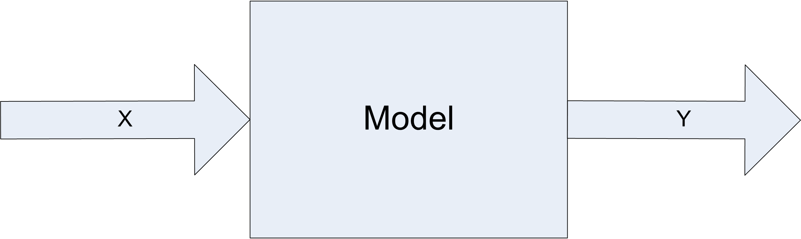
Input parameters are related to the controllable and uncontrollable factors associated with the system. For a simulation model, all input parameters are controllable; however, in the system being modeled you typically have control over only a limited set of parameters. Thus, in simulation you have the unique ability to control the random inputs into your model. Chapter 4 will discuss how to take advantage of controlling the random inputs.
Input parameters can be further classified as decision variables. That is, those parameters of interest that you want to change in order to test model configurations for decision-making. The structure of the model itself may be considered a decision variable when you are trying to optimize the performance of the system. When you change the input parameters for the simulation model and then execute the simulation, you are simulating a different design alternative.
This chapter describes how to analyze the output from a single design alternative and how to analyze the results of multiple design alternatives. Before addressing these important concepts, we need to understand how the time horizon of a simulation study is determined and how it might affect the statistical methods that will be required during the analysis.
When modeling a system, specific measurement goals for the simulation responses are often required. The goals, coupled with how the system operates, will determine how you execute and analyze the simulation experiments. In planning the experimental analysis, it is useful to think of simulations as consisting of two main categories related to the period of time over which a decision needs to be made:
In a finite-horizon simulation, a well define ending time or ending condition can be specified which clearly defines the end of the simulation. Finite horizon simulations are often called terminating simulations, since there are clear terminating conditions.
In an infinite horizon simulation, there is no well defined ending time or condition. The planning period is over the life of the system, which from a conceptual standpoint lasts forever. Infinite horizon simulations are often called steady state simulations because in an infinite horizon simulation you are often interested in the long-term or steady state behavior of the system.
For a finite horizon simulation, an event or condition associated with the system is present which indicates the end of each simulation replication. This event can be specified in advance or its time of occurrence can be a random variable. If it is specified in advance, it is often because you do not want information past that point in time (e.g. a 3 month planning horizon). It might be a random variable in the case of the system stopping when a condition is met. For example, an ending condition may be specified to stop the simulation when there are no entities left to process. Finite horizon simulations are very common since most planning processes are finite. A few example systems involving a finite horizon include:
Bank: bank doors open at 9am and close at 5pm
Military battle: simulate until force strength reaches a critical value
Filling a customer order: suppose a new contract is accepted to produce 100 products, you might simulate the production of the 100 products to see the cost, delivery time, etc.
For a finite horizon situation, we want to observe the behavior of the system over the specified time horizon and report on its performance. The observations available over one time horizon create a sample of performance. This sample of performance is sometimes referred to as a sample path because it is based on the trajectory of the performance measures over time. When we repeatedly run the simulation over multiple instances of the time horizon, we are observing different samples (sample paths). If each of the generated sample paths are independent and identically distributed, we call an instance a replication, and the set of instances as replications. The length of each sample path or replication corresponds to the finite horizon of interest. For example, in modeling a bank that opens at 9 am and closes at 5 pm, the length of the replication would be 8 hours.
In contrast to a finite horizon simulation, an infinite horizon simulation has no natural beginning point or ending point. In the case of infinite horizon simulation studies, we are almost always interested in reporting on the long-run performance of the system. Thus, the desired starting conditions of interest are sometime in the far off future. In addition, because we want long run performance there is no natural ending point of interest. Thus, we consider the horizon infinite. Of course, when you actually simulate an infinite horizon situation, a finite replication length must be specified. Hopefully, the replication length will be long enough to satisfy the goal of observing long run performance. Examples of infinite horizon simulations include:
A factory where you are interested in measuring the steady state throughput
A hospital emergency room which is open 24 hours a day, 7 days of week
A telecommunications system which is always operational
Infinite horizon simulations are often tied to systems that operate continuously and for which the long-run or steady state behavior needs to be estimated.
Because infinite horizon simulations often model situations where the system is always operational, they often involve the modeling of non-stationary processes. In such situations, care must be taken in defining what is meant by long-run or steady state behavior. For example, in an emergency room that is open 24 hours a day, 365 days per year, the arrival pattern to such a system probably depends on time. Thus, the output associated with the system is also non-stationary. The concept of steady state implies that the system has been running so long that the system’s behavior (in the form of performance measures) no longer depends on time; however, in the case of the emergency room since the inputs depend on time so do the outputs. In such cases it is often possible to find a period of time or cycle over which the non-stationary behavior repeats. For example, the arrival pattern to the emergency room may depend on the day of the week, such that every Monday has the same characteristics, every Tuesday has the same characteristics, and so on for each day of the week. Thus, on a weekly basis the non-stationary behavior repeats. You can then define your performance measure of interest based on the appropriate non-stationary cycle of the system. For example, you can define \(Y\) as the expected waiting time of patients per week. This random variable may have performance that can be described as long-term. In other words, the long-run weekly performance of the system may be stationary. This type of simulation has been termed steady state cyclical parameter estimation within (Law, 2007).
Of the two types of simulations, finite horizon simulations are easier to analyze. Luckily they are the more typical type of simulation found in practice. In fact, when you think that you are faced with an infinite horizon simulation, you should very carefully evaluate the goals of your study to see if they can just as well be met with a finite planning horizon. The analysis of finite horizon simulation studies will be discussed in this chapter while the discussion of infinite horizon simulation is presented in Chapter 5.
In the next section, we will examine in more detail the concepts of samples, sample paths, and replications by defining the types of statistical quantities observed within a simulation.
A simulation experiment occurs when the modeler sets the input parameters to the model and executes the simulation. This causes events to occur and the simulation model to evolve over time. This execution generates a sample path of the behavior of the system. During the execution of the simulation, the generated sample path is observed and various statistical quantities computed. When the simulation reaches its termination point, the statistical quantities are summarized in the form of output reports.
A simulation experiment may be for a single replication of the model or may have multiple replications. As previously noted, a replication is the generation of one sample path which represents the evolution of the system from its initial conditions to its ending conditions. If you have multiple replications within an experiment, each replication represents a different sample path, starting from the same initial conditions and being driven by the same input parameter settings. Because the randomness within the simulation can be controlled, the underlying random numbers used within each replication of the simulation can be made to be independent. Thus, as the name implies, each replication is an independently generated “repeat” of the simulation. Figure 1.2 illustrates the concept of replications being repeated (independent) sample paths.
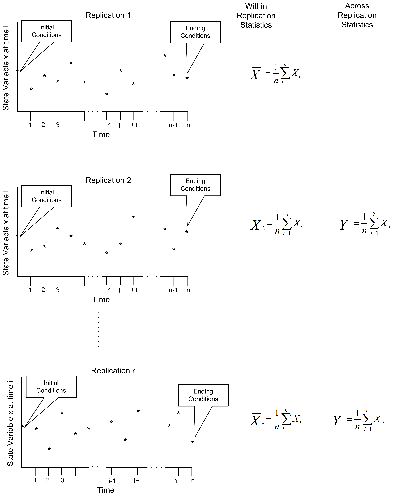
Within a single sample path (replication), the statistical behavior of the model can be observed. The statistical quantities collected during a replication are called within replication statistics.
Within replication statistics are collected based on the observation of the sample path and include observations on entities, state changes, etc. that occur during a single sample path execution. The observations used to form within replication statistics are not likely to be independent and identically distributed.
For within replication statistical collection there are two primary types of observations: tally and time-persistent. Tally observations represent a sequence of equally weighted data values that do not persist over time. This type of observation is associated with the duration or interval of time that an object is in a particular state or how often the object is in a particular state. As such it is observed by marking (tallying) the time that the object enters the state and the time that the object exits the state. Once the state change takes place, the observation is over (it is gone, it does not persist, etc.). If we did not observe the state change when it occurred, then we would have missed the observation. The time spent in queue, the count of the number of customers served, whether or not a particular customer waited longer than 10 minutes are all examples of tally observations. The vast majority of tally based data concerns the entities that flow through the system.
Time-persistent observations represent a sequence of values that persist over some specified amount of time with that value being weighted by the amount of time over which the value persists. These observations are directly associated with the values of the state variables within the model. The value of a time-persistent observation persists in time. For example, the number of customers in the system is a common state variable. If we want to collect the average number of customers in the system over time, then this will be a time-persistent statistic. While the value of the number of customers in the system changes at discrete points in time, it holds (or persists with) that value over a duration of time. This is why it is called a time-persistent variable.
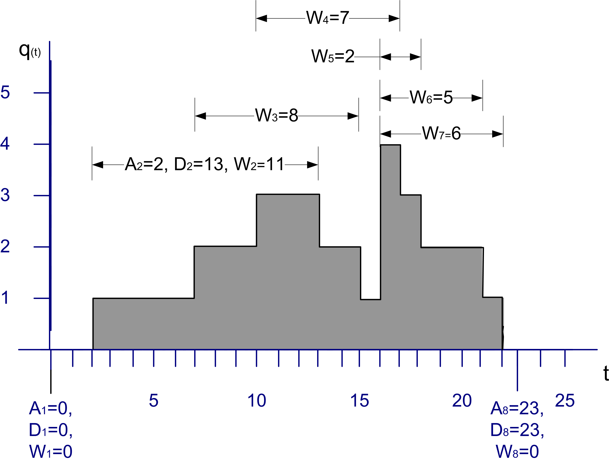
Figure 3.3 illustrates a single sample path for the number of customers in a queue over a period of time. From this sample path, events and subsequent statistical quantities can be observed. Let’s define some variables based on the data within Figure 3.3.
Let \(A_i \; i = 1 \ldots n\) represent the time that the \(i^{th}\) customer enters the queue
Let \(D_i \; i = 1 \ldots n\) represent the time that the \(i^{th}\) customer exits the queue
Let \(W_i = D_i - A_i \; i = 1 \ldots n\) represent the time that the \(i^{th}\) customer spends in the queue
Thus, \(W_i \; i = 1 \ldots n\) represents the sequence of wait times for the queue, each of which can be individually observed and tallied. This is tally type data because the customer enters a state (the queued state) at time \(A_i\) and exits the state at time \(D_i\). When the customer exits the queue at time \(D_i\), the waiting time in queue, \(W_i = D_i - A_i\) can be observed or tallied. \(W_i\) is only observable at the instant \(D_i\). This makes \(W_i\) tally based data and, once observed, its value never changes again with respect to time. Tally data is most often associated with an entity that is moving through states that are implied by the simulation model. An observation becomes available each time the entity enters and subsequently exits the state.
With tally data it is natural to compute the sample average as a measure of the central tendency of the data. Assume that you can observe \(n\) customers entering and exiting the queue, then the average waiting time across the \(n\) customers is given by:
\[\bar{W}(n) = \frac{1}{n}\sum_{i=1}^{n}W_{i}\]
Many other statistical quantities, such as the minimum, maximum, and sample variance, etc. can also be computed from these observations. Unfortunately, within replication data is often (if not always) correlated with respect to time. In other words, within replication observations like, \(W_i \, i = 1 \ldots n\), are not statistically independent. In fact, they are likely to also not be identically distributed. Both of these issues will be discussed when the analysis of infinite horizon or steady state simulation models is presented in Chapter 5.
The other type of statistical quantity encountered within a replication is based on time-persistent observations. Let \(q(t), t_0 < t \leq t_n\) be the number of customers in the queue at time \(t\). Note that \(q(t) \in \lbrace 0,1,2,\ldots\rbrace\). As illustrated in Figure 3.3, \(q(t)\) is a function of time (a step function in this particular case). That is, for a given (realized) sample path, \(q(t)\) is a function that returns the number of customers in the queue at time \(t\).
The mean value theorem of calculus for integrals states that given a function, \(f(\cdot)\), continuous on an interval \([a, b]\), there exists a constant, \(c\), such that
\[\int_a^b f(x)\mathrm{d}x = f(c)(b-a)\]
The value, \(f(c)\), is called the mean value of the function. A similar function can be defined for \(q(t)\). In simulation, this function is called the time-average or time-weighted average:
\[\bar{L}_q(n) = \frac{1}{t_n - t_0} \int_{t_0}^{t_n} q(t)\mathrm{d}t\]
This function represents the average with respect to time of the given state variable. This type of statistical variable is called time-persistent because \(q(t)\) is a function of time (i.e. it persists over time).
In the particular case where \(q(t)\) represents the number of customers in the queue, \(q(t)\) will take on constant values during intervals of time corresponding to when the queue has a certain number of customers. Let \(q(t)\) = \(q_k\) for \(t_{k-1} \leq t \leq t_k\) and define \(v_k = t_k - t_{k-1}\) then the time-average number in queue can be rewritten as follows:
\[\begin{aligned} \bar{L}_q(n) &= \frac{1}{t_n - t_0} \int_{t_0}^{t_n} q(t)\mathrm{d}t\\ & = \frac{1}{t_n - t_0} \sum_{k=1}^{n} q_k (t_k - t_{k-1})\\ & = \frac{\sum_{k=1}^{n} q_k v_k}{t_n - t_0} \\ & = \frac{\sum_{k=1}^{n} q_k v_k}{\sum_{k=1}^{n} v_k}\end{aligned}\]
Note that \(q_k (t_k - t_{k-1})\) is the area under \(q(t)\) over the interval \(t_{k-1} \leq t \leq t_k\) and
\[t_n - t_0 = \sum_{k=1}^{n} v_k = (t_1 - t_0) + (t_2 - t_1) + \cdots (t_{n-1} - t_{n-2}) + (t_n - t_{n-1})\]
is the total time over which the variable is observed. Thus, the time average is simply the area under the curve divided by the amount of time over which the curve is observed. From this equation, it should be noted that each value of \(q_k\) is weighted by the length of time that the variable has the value. This is why the time average is often called the time-weighted average. If \(v_k = 1\), then the time average is the same as the sample average.
With time-persistent data, you often want to estimate the percentage of time that the variable takes on a particular value. Let \(T_i\) denote the total time during \(t_0 < t \leq t_n\) that the queue had \(q(t) = i\) customers. To compute \(T_i\), you sum all the rectangles corresponding to \(q(t) = i\), in the sample path. Because \(q(t) \in \lbrace 0,1,2,\ldots\rbrace\) there are an infinite number of possible value for \(q(t)\) in this example; however, within a finite sample path you can only observe a finite number of the possible values. The ratio of \(T_i\) to \(T = t_n - t_0\) can be used to estimate the percentage of time the queue had \(i\) customers. That is, define \(\hat{p}_i = T_i/T\) as an estimate of the proportion of time that the queue had \(i\) customers during the interval of observation. Let’s take a look at an example.
Example 3.1 Consider Figure 3.3, which shows the changes in queue length over a simulated period of 25 time units. Compute the time average number in queue over the interval of time from 0 to 25. Compute the percentage of time that the queue had \(\lbrace 0, 1, 2, 3, 4\rbrace\) customers.
Reviewing Figure 3.3 indicates the changes in queue length over a simulated period of 25 time units. Since the queue length is a time-persistent variable, the time average queue length can be computed as:
\[\begin{aligned} \bar{L}_q & = \frac{0(2-0) + 1(7-2) + 2(10-7) + 3(13-10) + 2(15-13) + 1(16-15)}{25}\\ & + \frac{4(17-16) + 3(18-17) + 2(21-18) + 1(22-21) + 0(25-22)}{25} \\ & = \frac{39}{25} = 1.56\end{aligned}\]
To estimate the percentage of time that the queue had \(\lbrace 0, 1, 2, 3, 4\rbrace\) customers, the values of \(v_k = t_k - t_{k-1}\) need to be summed for whenever \(q(t) \in \lbrace 0, 1, 2, 3, 4 \rbrace\). This results in the following:
\[\hat{p}_0 = \dfrac{T_0}{T} = \dfrac{(2-0) + (25-22)}{25} = \dfrac{2 + 3}{25} = \dfrac{5}{25} = 0.2\]
\[\hat{p}_1 = \dfrac{T_1}{T} = \dfrac{(7-2) + (16-15) + (22-21)}{25} = \dfrac{5 + 1 + 1}{25} = \dfrac{7}{25} = 0.28\]
\[\hat{p}_2 = \dfrac{T_2}{T} = \dfrac{3 + 2 + 3)}{25} = \dfrac{8}{25} = 0.28\]
\[\hat{p}_3 = \dfrac{T_3}{T} = \dfrac{3 + 1}{25} = \dfrac{4}{25} = 0.16\]
\[\hat{p}_4 = \dfrac{T_4}{T} = \dfrac{1}{25} = \dfrac{1}{25} = 0.04\]
Notice that the sum of the \(\hat{p}_i\) adds to one. To compute the average waiting time in the queue, use the supplied values for each waiting time.
\[\bar{W}(8) = \frac{\sum_{i=1}^n W_i}{n} =\dfrac{0 + 11 + 8 + 7 + 2 + 5 + 6 + 0}{8} = \frac{39}{8} = 4.875\]
Notice that there were two customers, one at time 1.0 and another at time 23.0 that had waiting times of zero. The state graph did not move up or down at those times. Each unit increment in the queue length is equivalent to a new customer entering (and staying in) the queue. On the other hand, each unit decrement of the queue length signifies a departure of a customer from the queue. If you assume a first-in, first-out (FIFO) queue discipline, the waiting times of the six customers that entered the queue (and had to wait) are shown in the figure.
The examples presented in this section were all based on within replication observations. When we collect statistics on within replication observations, we get within replication statistics. the two most natural statistics to collect during a replication are the sample average and the time-weighted average. Arena computes these quantities using the TAVG(tally ID) and the DAVG(dstat ID) functions. Let’s take a closer look at how these functions operate.
We will start with a discussion of collecting statistics for observation-based data.
Let \(\left( x_{1},\ x_{2},x_{3},\cdots{,x}_{n(t)} \right)\) be a sequence of observations up to and including time \(t\).
Let \(n(t)\) be the number of observations up to and including time \(t\).
Let \(\mathrm{sum}\left( t \right)\) be the cumulative sum of the observations up to and including time \(t\). That is,
\[\mathrm{sum}\left( t \right) = \sum_{i = 1}^{n(t)}x_{i}\]
Let \(\bar{x}\left( t \right)\) be the cumulative average of the observations up to and including time \(t\). That is,
\[\bar{x}\left( t \right) = \frac{1}{n(t)}\sum_{i = 1}^{n(t)}x_{i} = \frac{\mathrm{sum}\left( t \right)}{n(t)}\]
Similar to the observation-based case, we can define the following notation. Let \(\mathrm{area}\left( t \right)\) be the cumulative area under the state variable curve, \(y(t)\).
\[\mathrm{area}\left( t \right) = \int_{0}^{t}{y\left( t \right)\text{dt}}\]
Define \(\bar{y}(t)\) as the cumulative average up to and including time \(t\) of the state variable \(y(t)\), such that:
\[\bar{y}\left( t \right) = \frac{\int_{0}^{t}{y\left( t \right)\text{dt}}}{t} = \frac{\mathrm{area}\left( t \right)}{t}\] The TAVG(tally ID) function will collect \(\bar{x}\left( t \right)\) and the DAVG(dstat ID) function collects \(\bar{y}(t)\). The tally ID is the name of the corresponding tally variable, typically defined within the RECORD module and dstat ID is the name of the corresponding time-persistent variable defined via a TIME PERSISTENT module. Using the previously defined notation, we can note the following Arena functions:
TAVG(tally ID) = \(\bar{x}\left( t \right)\)TNUM(tally ID) = \(n(t)\).Thus, we can compute \(sum(t)\) for some tally variable via:
\(\mathrm{sum}(t)\) = TAVG(tally ID)*TNUM(tally ID)
We have the ability to observe \(n(t)\) and \(\mathrm{sum}(t)\) via these functions during a replication and at the end of a replication.
To compute the time-persistent averages within Arena we can proceed in a very similar fashion as previously described by using the DAVG(dstat ID) function. The DAVG(dstat ID) function is \(\bar{y}\left( t \right)\) the cumulative average of a time-persistent variable. Thus, we can easily compute \(\mathrm{area}\left( t \right) = t \times \overline{y}\left( t \right)\) via DAVG(dstat ID)*TNOW. The special variable TNOW provides the current time of the simulation.
Thus, at the end of a replication we can observe TAVG(tally ID) and DAVG(dstat ID) giving us one observation per replication for these statistics. This is exactly what Arena does automatically when it reports the Category Overview Statistics, which are, in fact, averages across replications.
The statistical quantities collected across replications are called across replication statistics. Across replication statistics are collected based on the observation of the final value of a within replication statistic. Since across replication statistics are formed from the final value of a within replication statistic (e.g. TAVG(tally ID) or DAVG(dstat ID)), one observation per replication for each performance measure is available. Since each replication is considered independent, the observations that form the sample of an across replication statistic should be independent and identically distributed. As previously noted, the observations that form the sample path for within replication statistics are, in general, neither independent nor identically distributed. Thus, the statistical properties of within and across replication statistics are inherently different and require different methods of analysis. Of the two, within replication statistics are the more challenging from a statistical standpoint.
Finite horizon simulations can be analyzed by traditional statistical methodologies that assume a random sample, i.e. independent and identically distributed random variables by using across replication observations. A simulation experiment is the collection of experimental design points (specific input parameter values) over which the behavior of the model is observed. For a particular design point, you may want to repeat the execution of the simulation multiple times to form a sample at that design point. To get a random sample, you execute the simulation starting from the same initial conditions and ensure that the random numbers used within each replication are independent. Each replication must also be terminated by the same conditions. It is very important to understand that independence is achieved across replications, i.e. the replications are independent. The data within a replication may or may not be independent.
The method of independent replications is used to analyze finite horizon simulations. Suppose that \(n\) replications of a simulation are available where each replication is terminated by some event \(E\) and begun with the same initial conditions. Let \(Y_{rj}\) be the \(j^{th}\) observation on replication \(r\) for \(j = 1,2,\cdots,m_r\) where \(m_r\) is the number of observations in the \(r^{th}\) replication, and \(r = 1,2,\cdots,n\), and define the sample average for each replication to be:
\[\bar{Y}_r = \frac{1}{m_r} \sum_{j=1}^{m_r} Y_{rj}\]
If the data are time-based then,
\[\bar{Y}_r = \frac{1}{T_E} \int_0^{T_E} Y_r(t)\mathrm{d}t\]
\(\bar{Y}_r\) is the sample average based on the observation within the \(r^{th}\) replication. Arena observes \(\bar{Y}_r\) via the TAVG() and DAVG()functions at the end of every replication for every performance measure. Thus, \(\bar{Y}_r\) is a random variable that is observed at the end of each replication, therefore, \(\bar{Y}_r\) for \(r = 1,2,\ldots,n\) forms a random sample, \((\bar{Y}_1, \bar{Y}_2,..., \bar{Y}_n)\). This sample holds across replication observations and statistics computed on these observations are called across replication statistics. Because across replication observations are independent and identically distributed, they form a random sample and therefore standard statistical analysis techniques can be applied. Another nice aspect of the across replication observations, \((\bar{Y}_1, \bar{Y}_2,..., \bar{Y}_n)\), is the fact that they are often the average of many within replication observations. Because of the central limit theorem, the sampling distribution of the average tends be normally distributed. This is good because many statistical analysis techniques assume that the random sample is normally distributed.
To make this concrete, suppose that you are examining a bank that opens with no customers at 9 am and closes its doors at 5 pm to prevent further customers from entering. Let, \(W_{rj} j = 1,\ldots,m_r\), represents the sequence of waiting times for the customers that entered the bank between 9 am and 5 pm on day (replication) \(r\) where \(m_r\) is the number of customers who were served between 9 am and 5 pm on day \(r\). For simplicity, ignore the customers who entered before 5 pm but did not get served until after 5 pm. Let \(N_r (t)\) be the number of customers in the system at time \(t\) for day (replication) \(r\). Suppose that you are interested in the mean daily customer waiting time and the mean number of customers in the bank on any given 9 am to 5 pm day, i.e. you are interested in \(E[W_r]\) and \(E[N_r]\) for any given day. At the end of each replication, the following can be computed:
\[\bar{W}_r = \frac{1}{m_r} \sum_{j=1}^{m_r} W_{rj}\]
\[\bar{N}_r = \dfrac{1}{8}\int_0^8 N_r(t)\mathrm{d}t\]
At the end of all replications, random samples: \(\bar{W}_{1}, \bar{W}_{2},...\bar{W}_{n}\) and \(\bar{N}_{1}, \bar{N}_{2},...\bar{N}_{n}\) are available from which sample averages, standard deviations, confidence intervals, etc. can be computed. Both of these samples are based on observations of within replication data that are averaged to form across replication observations.
Both \(\bar{W_r}\) and \(\bar{N_r}\) are averages of many observations within the replication. Sometimes, there may only be one observation based on the entire replication. For example, suppose that you are interested in the probability that someone is still in the bank when the doors close at 5 pm, i.e. you are interested in \(\theta = P\left\{N(t = 5 pm) > 0\right\}\). In order to estimate this probability, an indicator variable can be defined within the simulation and observed each time the condition was met or not at the end of the replication. For this situation, an indicator variable,\(I_r\), for each replication can be defined as follows:
\[I_r = \begin{cases} 1 & N(t = 5 pm) > 0\\ 0 & N(t = 5 pm) \leq 0 \\ \end{cases}\]
Therefore, at the end of the replication, the simulation must tabulate whether or not there are customers in the bank and record the value of this indicator variable. Since this happens only once per replication, a random sample of the \(I_{1}, I_{2},...I_{n}\) will be available after all replications have been executed. We can use the observations of the indicator variable to estimate the desired probability. Technically, the observation of \(I_r\) occurs within (at the end) of the replication. The collection of the \(I_r\) for \(r=1, 2, ...n\) are the across replication observations and the estimator for the probability:
\[ \hat{p}=\dfrac{1}{n}\sum_{r=1}^{n}I_r \] is our across replication statistic. Clearly, in this situation, the sample \((I_1, I_2,..., I_n)\) would not be normally distributed; however, the observations would still be independent and identically distributed.
Using the method of replication, the analysis of the system will be based on a random sample. A key decision for the experiment will be the required number of replications. In other words, you need to determine the sample size.
Because confidence intervals may form the basis for decision making, you can use the confidence interval half-width in determining the sample size. For example, in estimating \(E[W_r]\) for the bank example, you might want to be 95% confident that you have estimated the true waiting time to within \(\pm 2\) minutes. A review of these and other statistical concepts will be the focus of the next section.
The simulation models that have been illustrated have estimated the quantity of interest with a point estimate (i.e. \(\bar{X}\)). For example, in Example 2.1, we knew that the true area under the curve is \(4.6\bar{6}\); however, the point estimate returned by the simulation was a value of 4.3872, based on 20 samples. Thus, there is sampling error in our estimate. The key question examined in this section is how to control the sampling error in a simulation experiment. The approach that we will take is to determine the number of samples so that we can have high confidence in our point estimate. In order to address these issues, we need to review some basic statistical concepts in order to understand the meaning of sampling error.
Let \(x_{i}\) represent the \(i^{th}\) observations in a sample, \(x_{1}, x_{2},...x_{n}\) of size \(n\). Represent the random variables in the sample as \(X_{1}, X_{2},...X_{n}\). The random variables form a random sample, if 1) the \(X_{i}\) are independent random variables and 2) every \(X_{i}\) has the same probability distribution. Let’s assume that these two assumptions have been established. Denote the unknown cumulative distribution function of \(X\) as \(F(x)\) and define the unknown expected value and variance of \(X\) with \(E[X] = \mu\) and \(Var[X] = \sigma^2\), respectively.
A statistic is any function of the random variables in a sample. Any statistic that is used to estimate an unknown quantity based on the sample is called an estimator. What would be a good estimator for the quantity \(E[X] = \mu\)? Without going into the details of the meaning of statistical goodness, one should remember that the sample average is generally a good estimator for \(E[X] = \mu\). Define the sample average as follows:
\[ \bar{X} = \frac{1}{n}\sum_{i=1}^{n}X_i \tag{3.1}\]
Notice that \(\bar{X}\) is a function of the random variables in the sample and therefore it is also a random variable. This makes \(\bar{X}\) a statistic, since it is a function of the random variables in the sample.
Any random variable has a corresponding probability distribution. The probability distribution associated with a statistic is called its sampling distribution. The sampling distribution of a statistic can be used to form a confidence interval on the point estimate associated with the statistic. The point estimate is simply the value obtained from the statistic once the data has been realized. The point estimate for the sample average is computed from the sample:
\[\bar{x} = \frac{1}{n}\sum_{i=1}^{n}x_i\]
A confidence interval expresses a degree of certainty associated with a point estimate. A specific confidence interval does not imply that the parameter \(\mu\) is inside the interval. In fact, the true parameter is either in the interval or it is not within the interval. Instead you should think about the confidence level \(1-\alpha\) as an assurance about the procedure used to compute the interval. That is, a confidence interval procedure ensures that if a large number of confidence intervals are computed each based on \(n\) samples, then the proportion of the confidence intervals that actually contain the true value of \(\mu\) should be close to \(1-\alpha\). The value \(\alpha\) represents risk that the confidence interval procedure will produce a specific interval that does not contain the true parameter value. Any one particular confidence interval will either contain the true parameter of interest or it will not. Since you do not know the true value, you can use the confidence interval to assess the risk of making a bad decision based on the point estimate. You can be confident in your decision making or conversely know that you are taking a risk of \(\alpha\) of making a bad decision. Think of \(\alpha\) as the risk that using the confidence interval procedure will get you fired. If we know the sampling distribution of the statistic, then we can form a confidence interval procedure.
Under the assumption that the sample size is large enough such that the distribution of \(\bar{X}\) is normally distributed then you can form an approximate confidence interval on the point estimate, \(\bar{x}\). Assuming that the sample variance:
\[ S^{2}(n) = \frac{1}{n-1}\sum_{i=1}^{n}(X_i-\bar{X})^2 \tag{3.2}\]
is a good estimator for \(Var[X] = \sigma^2\), then a \((1-\alpha)100\%\) two-sided confidence interval estimate for \(\mu\) is:
\[ \bar{x} \pm t_{1-(\alpha/2), n-1} \dfrac{s}{\sqrt{n}} \tag{3.3}\]
where \(t_{p, \nu}\) is the \(100p\) percentage point of the Student t-distribution with \(\nu\) degrees of freedom. The spreadsheet function T.INV(p, degrees freedom) computes the left-tailed Student-t distribution value for a given probability and degrees of freedom. That is, \(t_{p, \nu} = T.INV(p,\nu)\). The spreadsheet tab labeled Student-t in the spreadsheet that accompanies this chapter illustrates functions related to the Student-t distribution. Thus, in order to compute \(t_{1-(\alpha/2), n-1}\), use the following formula:
\[t_{1-(\alpha/2), n-1} = T.INV(1-(\alpha/2),n-1)\] The T.INV.2T(\(\alpha\), \(\nu\)) spreadsheet function directly computes the upper two-tailed value. That is,
\[ t_{1-(\alpha/2), n-1} =T.INV.2T(\alpha, n-1) \] Within the statistical package R, this computation is straight-forward by using the \(t_{p, n} = qt(p,n)\) function.
\[ t_{p, n} = qt(p,n) \]
#'qt(0.975, 5)
qt(0.975,5)[1] 2.570582#' set alpha
alpha = 0.05
#'qt(1-(alpha/2, 5)
qt(1-(alpha/2),5)[1] 2.570582The confidence interval for a point estimator can serve as the basis for determining how many observations to have in the sample. From Equation (Equation 3.3), the quantity:
\[ h = t_{1-(\alpha/2), n-1} \dfrac{s}{\sqrt{n}} \tag{3.4}\]
is called the half-width of the confidence interval. You can place a bound, \(\epsilon\), on the half-width by picking a sample size that satisfies:
\[ h = t_{1-(\alpha/2), n-1} \dfrac{s}{\sqrt{n}} \leq \epsilon \tag{3.5}\]
We call \(\epsilon\) the margin of error for the bound. Unfortunately, \(t_{1-(\alpha/2), n-1}\) depends on \(n\), and thus Equation (Equation 3.5) is an iterative equation. That is, you must try different values of \(n\) until the condition is satisfied. Within this text, we call this method for determining the sample size the Student-T iterative method.
Alternatively, the required sample size can be approximated using the normal distribution. Solving Equation (Equation 3.5) for \(n\) yields:
\[n \geq \left(\dfrac{t_{1-(\alpha/2), n-1} \; s}{\epsilon}\right)^2\]
As \(n\) gets large, \(t_{1-(\alpha/2), n-1}\) converges to the \(100(1-(\alpha/2))\) percentage point of the standard normal distribution \(z_{1-(\alpha/2)}\). This yields the following approximation:
\[ n \geq \left(\dfrac{z_{1-(\alpha/2)} s}{\epsilon}\right)^2 \tag{3.6}\]
Within this text, we refer to this method for determining the sample size as the normal approximation method. This approximation generally works well for large \(n\), say \(n > 50\). Both of these methods require an initial value for the standard deviation.
In order to use either the normal approximation method or the Student-T iterative method, you must have an initial value for, \(s\), the sample standard deviation. The simplest way to get an initial estimate of \(s\) is to make a small initial pilot sample (e.g. \(n_0=5\)). Given a value for \(s\) you can then set a desired bound and use the formulas. The bound is problem and performance measure dependent and is under your subjective control. You must determine what bound is reasonable for your given situation. One thing to remember is that the bound is squared in the denominator for evaluating \(n\). Thus, very small values of \(\epsilon\) can result in very large sample sizes.
Example 3.2 Suppose we are required to estimate the output from a simulation so that we are 99% confidence that we are within \(\pm 0.1\) of the true population mean. After taking a pilot sample of size \(n=10\), we have estimated \(s=6\). What is the required sample size?
We will use Equation (Equation 3.6) to determine the sample size requirement. For a 99% confidence interval, we have \(\alpha = 0.01\) and \(\alpha/2 = 0.005\). Thus, \(z_{1-0.005} = z_{0.995} = 2.576\). Because the margin of error, \(\epsilon\) is \(0.1\), we have that,
\[n \geq \left(\dfrac{z_{1-(\alpha/2)}\; s}{\epsilon}\right)^2 = \left(\dfrac{2.576 \times 6}{0.1}\right)^2 = 23888.8 \approx 23889\]
If the quantity of interest is a proportion, then a different method can be used. In particular, a \(100\times(1 - \alpha)\%\) large sample two sided confidence interval for a proportion, \(p\), has the following form:
\[ \hat{p} \pm z_{1-(\alpha/2)} \sqrt{\dfrac{\hat{p}(1 - \hat{p})}{n}} \tag{3.7}\]
where \(\hat{p}\) is the estimate for \(p\). From this, you can determine the sample size via the following equation:
\[ n = \left(\dfrac{z_{1-(\alpha/2)}}{\epsilon}\right)^{2} \hat{p}(1 - \hat{p}) \tag{3.8}\]
Again, a pilot run is necessary for obtaining an initial estimate of \(\hat{p}\), for use in determining the sample size. If no pilot run is available, then \(\hat{p} =0.5\) is often assumed as a worse case approximation.
If you have more than one performance measure of interest, you can use these sample size techniques for each of your performance measures and then use the maximum sample size required across the performance measures. Now, let’s illustrate these methods based on a small Arena simulation.
To facilitate some of the calculations related to determining the sample size for a simulation experiment, I have constructed a spreadsheet called SampleSizeDetermination.xlsx, which is found in the book support files for this chapter. You may want to utilize that spreadsheet as you go through this an subsequent sections.
Using a simple example, we will illustrate how to determine the sample size necessary to estimate a quantity of interest with a high level of confidence.
Example 3.3 Suppose that we want to simulate a normally distributed random variable, \(X\), with \(E[X] = 10\) and \(Var[X] = 16\). From the simulation, we want to estimate the true population mean with 99 percent confidence for a half-width \(\pm 0.50\) margin of error. In addition to estimating the population mean, we want to estimate the probability that the random variable exceeds 8. That is, we want to estimate, \(p= P[X>8]\). We want to be 95% confident that our estimate of \(P[X>8]\) has a margin of error of \(\pm 0.05\). What are the sample size requirements needed to meet the desired margins of error?
Using simulation for this example is for illustrative purposes. Naturally, we actually know the true population mean and we can easily compute the \(p= P[X>8]\). for this situation. However, the example will illustrate sample size determination, which is an important planning requirement for simulation experiments, and the example reinforces how to use the RECORD module.
Let \(X\) represent the unknown random variable of interest. Then, we are interested in estimating \(E[X]=\mu\) and \(p = P[X > 8]\). To estimate these quantities, we generate a random sample, \((X_1,X_2,...,X_n)\). \(E[X]\) can be estimated using \(\bar{X}\). To estimate a probability it is useful to define an indicator variable. An indicator variable has the value 1 if the condition associated with the probability is true and has the value 0 if it is false. To estimate \(p\), define the following indicator variable:
\[ Y_i = \begin{cases} 1 & X_i > 8\\ 0 & X_i \leq 8 \\ \end{cases} \] This definition of the indicator variable \(Y_i\) allows \(\bar{Y}\) to be used to estimate \(p\). Recall the definition of the sample average \(\bar{Y}\). Since \(Y_{i}\) is a \(1\) only if \(X_i > 8\), then the \(\sum \nolimits_{i=1}^{n} Y_{i}\) simply adds up the number of \(1\)’s in the sample. Thus, \(\sum\nolimits_{i=1}^{n} Y_{i}\) represents the count of the number of times the event \(X_i > 8\) occurred in the sample. Call this \(\#\lbrace X_i > 8\rbrace\). The ratio of the number of times an event occurred to the total number of possible occurrences represents the proportion. Thus, an estimator for \(p\) is:
\[ \hat{p} = \bar{Y} = \frac{1}{n}\sum_{i=1}^{n}Y_i = \frac{\#\lbrace X_i > 8\rbrace}{n} \] Therefore, computing the average of an indicator variable will estimate the desired probability. The pseudo-code for this situation is quite simple:
CREATE 1 entity
ASSIGN myX = NORM(10, 4)
Begin RECORD
myX as EstimatedX
(myX > 8) as EstimatedProb
End RECORD
DISPOSEIn the pseudo-code, the RECORD module is recording observations of the quantity \((myX > 8)\). This quantity is actually a logical condition which will evaluate to true (1) or false (0) given the value of \(myX\). Thus, the RECORD module will be recording observations of 1’s and 0’s. Because the RECORD module computes that average of the values that it “records”, we will get an estimate of the probability. Thus, the quantity, \((myX > 8)\) is an indicator variable for the desired event. Using a RECORD module to estimate a probability in this manner is quite effective.
Now, in more realistic simulation situations, we would not know the true population mean and variance. Thus, in solving this problem, we will ignore that information. To apply the previously discussed sample size determination methods, we need estimates of \(\sigma = \sqrt{Var[X]}\) and \(p = P[X>8]\). In order to get estimates of these quantities, we need to run our simulation experiment; however, in order to run our simulation experiment, we need to know how many observations to make. This is quite a catch-22 situation!
To proceed, we need to run our simulation model for a pilot experiment. From a small number of samples (called a pilot experiment, pilot run or pilot study), we will estimate \(\sigma\) and \(p = P[X>8]\) and then use those estimates to determine how many samples we need to meet the desired margins of error. We will then re-run the simulation using the recommended sample size.
The natural question to ask is how big should your pilot sample be? In general, this depends on how much it costs for you to collect the sample. Within a simulation experiment context, generally, cost translates into how long your simulation model takes to execute. For this small problem, the execution time is trivial, but for large and complex simulation models the execution time may be in hours or even days. A general rule of thumb is between 10 and 30 observations. For this example, we will use an initial pilot sample size, \(n_0 = 20\).
The Arena model can be easily built by following the pseudo-code. You can find the Arena model as part of the files associated with the chapter. Running the model for the 20 replications yields the following results.
| Performance Measures | Average | 95% Half-Width |
|---|---|---|
| EstimatedProb | 0.70 | 0.22 |
| EstimatedX | 10.3224 | 2.24 |
Notice that the confidence interval for the true mean is \((8.0824,12.5624)\) with a half-width of \(2.24\), which exceeds the desired margin of error, \(\epsilon = 0.5\). Notice also that this particular confidence interval happens to contain the true mean \(E[X] = 10\). To determine the sample size so that we get a half-width that is less than \(\epsilon = 0.1\) with 99% confidence, we can use Equation 3.6. In order to do this, we must first have an estimate of the sample standard deviation, \(s\). Since Arena reports a half-width for a 95% confidence interval, we need to use Equation 3.4 and solve for \(s\) in terms of \(h\). Rearranging Equation 3.4 yields,
\[ s = \dfrac{h\sqrt{n}}{t_{1-(\alpha/2), n-1}} \tag{3.9}\]
Using the results from Table 3.1 and \(\alpha = 0.05\) in Equation 3.9 yields,
\[ s_0 = \dfrac{h\sqrt{n_0}}{t_{1-(\alpha/2), n_0-1}} = \dfrac{2.24\sqrt{20}}{t_{0.975, 19}}= \dfrac{2.24\sqrt{20}}{2.093}=4.7862 \]
Now, we can use Equation 3.6 to determine the sample size requirement. For a 99% confidence interval, we have \(\alpha = 0.01\) and \(\alpha/2 = 0.005\). Thus, \(z_{0.995} = 2.576\). Because the margin of error, \(\epsilon\) is \(0.5\), we have that,
\[n \geq \left(\dfrac{z_{1-(\alpha/2)}\; s}{\epsilon}\right)^2 = \left(\dfrac{2.576 \times 4.7862}{0.5}\right)^2 = 608.042 \approx 609\] To determine the sample size for estimating \(p=P[X>8]\) with 95% confidence to \(\pm 0.1\), we can use Equation 3.8
\[ n = \left(\dfrac{z_{1-(\alpha/2)}}{\epsilon}\right)^{2} \hat{p}(1 - \hat{p})=\left(\dfrac{z_{0.975}}{0.1}\right)^{2} (0.22)(1 - 0.22)=\left(\dfrac{1.96}{0.1}\right)^{2} (0.22)(0.78) =65.92 \approx 66 \] By using the maximum of \(\max{(66, 609)=609}\), we can re-run the simulation this number of replications. Doing so, yields,
| Performance Measures | Average | 95% Half-Width |
|---|---|---|
| EstimatedProb | 0.69 | 0.04 |
| EstimatedX | 9.9032 | 0.32 |
As can be seen in Table 3.2, the half-width values meet the desire margins of error. It may be possible that the margins of error might not be met. This suggests that more than \(n = 609\) observations is needed to meet the margin of error criteria. Equation 3.6 and Equation 3.8 are only approximations and based on a pilot sample. Thus, if there was considerable sampling error associated with the pilot sample, the approximations may be inadequate.
As can be noted from this example in order to apply the normal approximation method for determining the sample size based on the pilot run of an Arena model, we need to compute the initial sample standard deviation, \(s_0\), from the initial reported half-width, \(h\), that appears on the Arena report. This requires the use of Equation 3.9 to first compute the value of \(s\) from \(h\). We can avoid this calculation by using the half-width ratio method for determining the sample size.
Let \(h_0\) be the initial value for the half-width from the pilot run of \(n_0\) replications. Then, rewriting Equation 3.4 in terms of the pilot data yields:
\[ h_0 = t_{1-(\alpha/2), n_0 - 1} \dfrac{s_0}{\sqrt{n_0}} \] Solving for \(n_0\) yields:
\[ n_0 = t_{1-(\alpha/2), n_0 -1}^{2} \dfrac{s_{0}^{2}}{h_{0}^{2}} \tag{3.10}\]
Similarly for any \(n\), we have:
\[ n = t_{1-(\alpha/2), n-1}^{2} \dfrac{s^{2}}{h^{2}} \tag{3.11}\]
Taking the ratio of \(n_0\) to \(n\) (Equation 3.10 and Equation 3.11) and assuming that \(t_{1-(\alpha/2), n-1}\) is approximately equal to \(t_{1-(\alpha/2), n_0 - 1}\) and \(s^2\) is approximately equal to \(s_0^2\), yields,
\[n \cong n_0 \dfrac{h_0^2}{h^2} = n_0 \left(\frac{h_0}{h}\right)^2\]
This is the half-width ratio equation.
\[ n \geq n_0 \left(\frac{h_0}{h}\right)^2 \tag{3.12}\]
The issue that we face when applying Equation 3.12 is that Arena only reports the 95% confidence interval half-width on its reports. Thus, to apply Equation 3.12 the value of \(h_0\) will be based on an \(\alpha = 0.05\). If the desired half-width, \(h\), is required for a different confidence level, e.g. a 99% confidence interval, then you must first translate \(h_0\) to be based on the desired confidence level. This requires computing \(s\) from Equation 3.9 and then recomputing the actual half-width, \(h\), for the desired confidence level.
Using the results from Table 3.1 and \(\alpha = 0.05\) in Equation 3.9 we already know that \(s_0 = 4.7862\) for a 95% confidence interval. Thus, for a 99% confidence interval, where \(\alpha = 0.01\) and \(\alpha/2 = 0.005\), we have:
\[ h_0 = t_{1-(\alpha/2), n_0-1} \dfrac{s_0}{\sqrt{n_0}}= t_{0.995, 19}\dfrac{4.7862}{\sqrt{20}}=2.861\dfrac{4.7862}{\sqrt{20}}=3.0618 \] Now, we can apply Equation 3.12 to this problem with the desire half-width bound \(\epsilon = 0.5 = h\):
\[ n \geq n_0 \left(\frac{h_0}{h}\right)^2=20\left(\frac{3.0618}{h}\right)^2=20\left(\frac{3.0618}{0.5}\right)^2=749.98 \cong 750 \] We see that for this pilot sample, the half-width ratio method recommends a substantially large sample size, \(750\) versus \(609\). In practice, the half-width ratio method tends to be conservative by recommending a larger sample size. We will see another example of these methods within the next section.
Based on these examples, you should have a basic understanding of how simulation can be performed to meet a desired margin of error. In general, simulation models are much more interesting than this simple example. To deepen your knowledge, we will model a more interesting situation in the next section.
In this section, we will model the operation of a STEM Career Fair mixer during a six-hour time period. The purpose of the example is to illustrate the following concepts:
Probabilistic flow of entities using the DECIDE module with the by chance option
Additional options of the PROCESS module
Using the Label module to direct the flow of entities
Collecting statistics on observational (tally) data using the RECORD module
Collecting statistics on time-persistent data using the Statistics panel
Analysis of a finite horizon model to ensure a pre-specified half-width requirement
Example 3.4 Students arrive to a STEM career mixer event according to a Poisson process at a rate of 0.5 student per minute. The students first go to the name tag station, where it takes between 10 and 45 seconds uniformly distributed to write their name and affix the tag to themselves. We assume that there is plenty of space at the tag station, as well has plenty of tags and markers, such that a queue never forms.
After getting a name tag, 50% of the students wander aimlessly around, chatting and laughing with their friends until they get tired of wandering. The time for aimless students to wander around is triangularly distributed with a minimum of 10 minutes, a most likely value of 15 minutes, and a maximum value of 45 minutes. After wandering aimlessly, 90% decide to buckle down and visit companies and the remaining 10% just are too tired or timid and just leave. Those that decide to buckle down visit the MalWart station and then the JHBunt station as described next.
The remaining 50% of the original, newly arriving students (call them non-aimless students), first visit the MalWart company station where there are 2 recruiters taking resumes and chatting with applicants. At the MalWart station, the student waits in a single line (first come first served) for 1 of the 2 recruiters. After getting 1 of the 2 recruiters, the student and recruiter chat about the opportunities at MalWart. The time that the student and recruiter interact is exponentially distributed with a mean of 3 minutes. After visiting the MalWart station, the student moves to the JHBunt company station, which is staffed by 3 recruiters. Again, the students form a single line and pick the next available recruiter. The time that the student and recruiter interact at the JHBunt station is also exponentially distribution, but with a mean of 6 minutes. After visiting the JHBunt station, the student departs the mixer.
The organizer of the mixer is interested in collecting statistics on the following quantities within the model:
number of students attending the mixer at any time t
number of students wandering at any time t
utilization of the recruiters at the MalWart station
utilization of the recruiters at the JHBunt station
number of students waiting at the MalWart station
number of students waiting at the JHBunt station
the waiting time of students waiting at the MalWart station
the waiting time of students waiting at the JHBunt station
total time students spend at the mixer broken down in the following manner
all students regardless of what they do and when they leave
students that wander and then visit recruiters
students that do not wander
The STEM mixer organizer is interested in estimating the average time students spend at the mixer (regardless of what they do) to within plus or minus 1 minute with a 95% confidence level.
When developing a simulation model, whether you are an experienced analyst or a novice, you should follow a modeling recipe. I recommend developing answers to the following questions:
What is the system?
What are the elements of the system?
What information is known by the system?
What are the required performance measures?
What are the entity types?
What information must be recorded or remembered for each entity instance?
How are entities (entity instances) introduced into the system?
What are the resources that are used by the entity types?
What are the process flows? Sketch the process or make an activity flow diagram
Develop pseudo-code for the situation
Implement the model in Arena
We will apply each of these questions to the STEM mixer example. The first set of questions: What is the system? What information is known by the system? are used to understand what should be included in the modeling and what should not be included. In addition, understanding the system to be modeled is essential for validating your simulation model. If you have not clearly defined what you are modeling (i. e. the system), you will have a very difficult time validating your simulation model.
The first thing that I try to do when attempting to understand the system is to draw a picture. A hand drawn picture or sketch of the system to be modeled is useful for a variety of reasons. First, a drawing attempts to put down “on paper” what is in your head. This aids in making the modeling more concrete and it aids in communicating with system stakeholders. In fact, a group stakeholder meeting where the group draws the system on a shared whiteboard helps to identify important system elements to include in the model, fosters a shared understanding, and facilitates model acceptance by the potential end-users and decision makers.
You might be thinking that the system is too complex to sketch or that it is impossible to capture all the elements of the system within a drawing. Well, you are probably correct, but drawing an idealized version of the system helps modelers to understand that you do not have to model reality to get good answers. That is, drawing helps to abstract out the important and essential elements that need to be modeled. In addition, you might think, why not take some photographs of the system instead of drawing? I say, go ahead, and take photographs. I say, find some blueprints or other helpful artifacts that represent the system and its components. These kinds of things can be very helpful if the system or process already exists. However, do not stop at photographs, drawing facilitates free flowing ideas, and it is an active/engaging process. Do not be afraid to draw. The art of abstraction is essential to good modeling practice.
Alright, have I convinced you to make a drawing? So, your next question is, what should my drawing look like and what are the rules for making a drawing? Really? My response to those kinds of questions is that you have not really bought into the benefits of drawing and are looking for reasons to not do it. There are no concrete rules for drawing a picture of the system. I like to suggest that the drawing can be like one of your famous kindergarten pictures you used to share with your grandparents. In fact, if your grandparents could look at the drawing and be able to describe back to you what you will be simulating, you will be on the right track! There are not really any rules.
Well, I will take that back. I have one rule. The drawing should not look like an engineer drew it. Try not to use engineering shapes, geometric shapes, finely drawn arrows, etc. You are not trying to make a blueprint. You are not trying to reproduce the reality of the system by drawing it to perfect scale. You are attempting to conceptualize the system in a form that facilitates communication. Don’t be afraid to put some labels and text on the drawing. Make the drawing a picture that is rich in the elements that are in the system. Also, the drawing does not have to be perfect, and it does not have to be complete. Embrace the fact that you may have to circle back and iterate on the drawing as new modeling issues arise. You have made an excellent drawing if another simulation analyst could take your drawing and write a useful narrative description of what you are modeling.
Figure 3.4 illustrates a drawing for the STEM mixer problem. As you can see in the drawing, we have students arriving to a room that contains some tables for conversation between attendees. In addition, the two company stations are denoted with the recruiters and the waiting students. We also see the wandering students and the timid students’ paths through the system. At this point, we have a narrative description of the system (via the problem statement) and a useful drawing of the system. We are ready to answer the following questions:
What are the elements of the system?
What information is known by the system?
When answering the question “what are the elements?”, your focus should be on two things: 1) the concrete structural things/objects that are required for the system to operate and 2) the things that are operated on by the system (i.e. the things that flow through the system).
What are the elements?
students (non-wanderers, wanderers, timid)
recruiters: 2 for MalWart and 3 for JHBunt
waiting lines: one line for MalWart recruiters, one line for JHBunt recruiters
company stations: MalWart and JHBunt
The paths that students may take.
Notice that the answers to this question are mostly things that we can point at within our picture (or the real system).
When answering the question “what information is known at the system level?”, your focus should be identifying facts, input parameters, and environmental parameters. Facts tend to relate to specific elements identified by the previous question. Input parameters are key variables, distributions, etc. that are typically under the control of the analyst and might likely be varied during the use of the model. Environmental parameters are also a kind of input parameter, but they are less likely to be varied by the modeler because they represent the operating environment of the system that is most likely not under control of the analyst to change. However, do not get hung up on the distinction between input parameters and environmental parameters, because their classification may change based on the objectives of the simulation modeling effort. Sometimes innovative solutions come from questioning whether or not an environmental parameter can really be changed.
What information is known at the system level?
students arrive according to a Poisson process with mean rate 0.5 students per minute or equivalently the time between arrivals is exponentially distributed with a mean of 2 minutes
time to affix a name tag ~ UNIF(20, 45) seconds
50% of students are go-getters and 50% are wanderers
time to wander ~ TRIA(10, 15, 45) minutes
10% of wanderers become timid/tired, 90% visit recruiters
number of MalWart recruiters = 2
time spent chatting with MalWart recruiter ~ EXPO(3) minutes
number of JHBunt recruiters = 3
time spent chatting with JHBunt recruiter ~ EXPO(6) minutes
A key characteristic of the answers to this question is that the information is “global”. That is, it is known at the system level. We will need to figure out how to represent the storage of this information when implementing the model within software.
The next question to address is “What are the required performance measures?“ For this situation, we have been given as part of the problem a list of possible performance measures, mostly related to time spent in the system and other standard performance measures related to queueing systems. In general, you will not be given the performance measures. Instead, you will need to interact with the stakeholders and potential users of the model to identify the metrics that they need in order to make decisions based on the model. Identifying the metrics is a key step in the modeling effort. If you are building a model of an existing system, then you can start with the metrics that stakeholders typically use to character the operating performance of the system. Typical metrics include cost, waiting time, utilization, work in process, throughput, and probability of meeting design criteria.
Once you have a list of performance measures, it is useful to think about how you would collect those statistics if you were an observer standing within the system. Let’s pretend that we need to collect the total time that a student spends at the career fair and we are standing somewhere at the actual mixer. How would you physically perform this data collection task? In order to record the total time spent by each student, you would need to note when each student arrived and when each student departed. Let \(A_{i}\) be the arrival time of the \(i^{\text{th}}\) student to arrive and let \(D_{i}\) be the departure time of the \(i^{\text{th}}\) student. Then, the system time (T) of the \(i^{\text{th}}\) student is \({T_{i} = D}_{i} - A_{i}\). How could we keep track of \(A_{i}\) for each student? One simple method would be to write the time that the student arrived on a sticky note and stick the note on the student’s back. Hey, this is pretend, right? Then, when the student leaves the mixer, you remove the sticky note from their back and look at your watch to get \(D_{i}\) and thus compute, \(T_{i}\). Easy! We will essentially do just that when implementing the collection of this statistic within the simulation model. Now, consider how you would keep track of the number of students attending the mixer. Again, standing where you can see the entrance and the exit, you would increment a counter every time a student entered and decrement the counter every time a student left. We will essentially do this within the simulation model.
Thus, identifying the performance measures to collect and how you will collect them will answer the 2nd modeling question. You should think about and document how you would do this for every key performance measure. However, you will soon realize that simulation modeling languages, like Arena, have specific constructs that automatically collect common statistical quantities such as resource utilization, queue waiting time, queue size, etc. Therefore, you should concentrate your thinking on those metrics that will not automatically be collected for you by the simulation software environment. In addition to identifying and describing the performance measures to be collected, you should attempt to classify the underlying data needed to compute the statistics as either observation-based (tally) data or time-persistent (time-weighted) data. This classification will be essential in determining the most appropriate constructs to use to capture the statistics within the simulation model. The following table summarizing the type of each performance measure requested for the STEM mixer simulation model.
| Performance Measure | Type |
|---|---|
| Average number of students attending the mixer at any time t | Time persistent |
| Average number of students wandering within the mixer at any time t | Time persistent |
| Average utilization of the recruiters at the MalWart station | Time persistent |
| Average utilization of the recruiters at the MalWart station | Time persistent |
| Average utilization of the recruiters at the JHBunt station | Time persistent |
| Average number of students waiting at the MalWart station | Time persistent |
| Average number of students waiting at the JHBunt station | Time persistent |
| Average waiting time of students waiting at the MalWart station | Tally |
| Average waiting time of students waiting at the JHBunt station | Tally |
| Average system time for students regardless of what they do | Tally |
| Average system time for students that wander and then visit recruiters | Tally |
| Average system time for students that do not wander | Tally |
Now, we are ready to answer the rest of the questions. When performing a process-oriented simulation, it is important to identify the entity types and the characteristics of their instances. An entity type is a classification or indicator that distinguishes between different entity instances. If you are familiar with object-oriented programming, then an entity type is a class, and an entity instance is an object of that class. Thus, an entity type describes the entity instances (entities) that are in its class. An entity instance (or just entity) is something that flows through the processes within the system. Entity instances (or just entities) are realizations of objects within the entity type (class). Different entity types may experience different processes within the system. The next set of questions are about understanding entity types and their instances: What are the entity types? What information must be recorded or remembered for each entity (entity instance) of each entity type? How are entities (entity instances) for each entity type introduced into the system?
Clearly, the students are a type of entity. We could think of having different sub-types of the student entity type. That is, we can conceptualize three types of students (non-wanderers, wanderers, and timid/tired). However, rather than defining three different classes or types of students, we will just characterize one general type of entity called a Student and denote the different types with an attribute that indicates the type of student. An attribute is a named property of an entity type and can have different values for different instances. We will use the attribute, myType, to denote the type of student (1= non-wanders, 2 = wanderers, 3 = timid). Then, we will use this type attribute to help in determining the path that a student takes within the system and when collecting the required statistics.
We are basically told how the students (instances of the student entity type) are introduced to the system. That is, we are told that the arrival process for students is Poisson with a mean rate of 0.5 students per minute. Thus, we have that the time between arrivals is exponential with a mean of 2 minutes. What information do we need to record or be remembered for each student? The answer to this question identifies the attributes of the entity. Recall that an attribute is a named property of an entity type which can take on different values for different entity instances. Based on our conceptualization of how to collect the total time in the system for the students, it should be clear that each entity (student) needs to remember the time that the student arrived. That is our sticky note on their backs. In addition, since we need to collect statistics related to how long the different types of students spend at the STEM fair, we need each student (entity) to remember what type of student they are (non-wanderer, wanderer, and timid/tired). So, we can use the, myType, attribute to note the type of the student.
After identifying the entity types, you should think about identifying the resources. Resources are system elements that entity instances need in order to proceed through the system. The lack of a resource causes an entity to wait (or block) until the resource can be obtained. By the way, if you need help identifying entity types, you should identify the things that are waiting in your system. It should be clear from the picture that students wait in either of two lines for recruiters. Thus, we have two resources: MalWart Recruiters and JHBunt Recruiters. We should also note the capacity of the resources. The capacity of a resource is the total number of units of the resource that may be used. Conceptually, the 2 MalWart recruiters are identical. There is no difference between them (as far as noted in the problem statement). Thus, the capacity of the MalWart recruiter resource is 2 units. Similarly, the JHBunt recruiter resource has a capacity of 3 units.
In order to answer the “and how” part of the question, I like to summarize the entities, resources and activities experienced by the entity types in a table. Recall that an activity is an interval of time bounded by two events. Entities experience activities as they move through the system. The following table summarizes the entity types, the activities, and the resources. This will facilitate the drawing of an activity diagram for the entity types.
| Entity Type | Activity | Resource Used |
|---|---|---|
| Student (all) | time to affix a name tag ~ UNIF(20, 45) seconds | None |
| Student (wanderer) | Wandering time ~ TRIA(10, 15, 45) minutes | None |
| Student (not timid) | Talk with MalWart ~ EXPO(3) minutes | 1 of the 2 MalWart recruiters |
| Student (not timid) | Talk with JHBunt ~ EXPO(6) minutes | 1 of the 3 JHBunt recruiters |
Now we are ready to document the processes experienced by the entities. A good way to do this is through an activity flow diagram. As described in the Chapter 2, an activity diagram will have boxes that show the activities, circles to show the queues and resources, and arrows, to show the paths taken. Figure 3.5 presents the activity diagram for this situation.
In Figure 3.5, we see that the students are created according to a time between arrival (TBA) process that is exponentially distributed with a mean of 2 minutes and they immediately experience the activity associated with affixing the name tag. Note that the activity does not require any resources and thus has no queue in front of it. Then, the students follow one of two paths, with 50% becoming “non-wanderers” and 50% becoming “wanderers”. The wandering students, wander aimlessly, for period of time, which is represented by another activity that does not require any resources. Then, the 90% of the students follow the non-wanderer path and the remaining 10% of the students, the timid/tired students, leave the system. The students that decide to visit the recruiting stations, first visit the MalWart station, where in the diagram we see that there is an activity box for their talking time with the recruiter. During this talking time, they require one of the recruiters and thus we have a resource circle indicating the usage of the resource. In addition, we have a circle with a queue denoted before the activity to indicate that the students visiting the station may need to wait. The JHBunt station is represented in the same fashion. After visiting the JHBunt station, the students depart the mixer. Now, we are ready to represent this situation using some pseudo-code.
Pseudo-code is simply a computer language like construct for representing the programming elements of a computer program. In this text, we will use pseudo-code that has elements of Arena-like syntax to help document the coding logic, before we use Arena. Let me state that again. Write pseudo-code, before opening up Arena and laying down Arena modules. Why? Pseudo-code facilitates communication of the logic, without a person having to know Arena. Often, other simulation programming environments will have constructs similar to those available within Arena. Thus, your coding logic is more generic. Secondly, pseudo-code is compact and concise. Lastly, having pseudo-code before using Arena has proven over many years to result in better organized models that tend to work correctly.
The following table is an initial listing of pseudo-code syntax that we will utilize within this example. Notice that in the table, I have noted some of the naming conventions that I recommend and some comments about the usage of the construct.
| Keyword | Purpose | Comments |
|---|---|---|
| ATTRIBUTES | To provide a list of attributes and their usage | Attribute names should start with “my” |
| VARIABLES | To provide a list of variables and their usage | Variable names should start with “v” |
| RESOURCES | To provide a list of resources and their capacity | Resource names should start with “r” |
| CREATE | To define a creational pattern | Indicate what is being created and the timing of the creation |
| ASSIGN | To represent the assignment of a value to a variable, attribute, or other construct | BEGIN ASSIGN Multiple assignment statements END ASSIGN |
| DECIDE IF | To represent conditional logic or path choice | DECIDE IF (condition) Executed if condition is true ELSE Executed if condition is false END DECIDE |
| DECIDE with chance | To represent probabilistic path choice | DECIDE with chance: p: Executed with probability p 1-p: Executed with probability 1-p END DECIDE |
| DELAY | To represent a scheduled passage of time for an activity | Indicate the time or distribution associated with the delay and name of activity |
| SEIZE | To represent the need for a resource | Indicate the name of the resource and the number of units required |
| RELEASE | To represent the release of units of a resource | Indicate the name of the resource and the number of units released |
| GOTO: Label | To direct the execution to a particular label | Provide the name of the label |
| Label: Name | To indicate a label where to go | Provide the name of the label |
| RECORD (expression) | To indicate the collection of statistics | BEGIN RECORD Multiple expression statements END RECORD |
| DISPOSE | To represent the disposal of the entity that was executing the code | Implies the release of memory associated with the entity |
These pseudo-code constructs will represent specific modules or programming constructs within the Arena environment. There are a lot more possibilities and variations of these constructs that will be explored throughout the textbook. One such variation is in describing a process. The SEIZE, DELAY, RELEASE combination is so prevalent, you will see that Arena has defined a PROCESS module that provides common variations of usage of these three constructs. Syntactically, we might indicate the usage of a PROCESS module as follows:
BEGIN PROCESS: SEIZE, DELAY, RELEASE
Resource: worker
Amount needed: 1
Delay time: 5 minutes
END PROCESSThis is conceptually the same as writing:
SEIZE 1 worker
DELAY for 5 minutes
RELEASE 1 workerYou decide which you prefer to write. Either case indicates to me that we would use the Arena PROCESS module. I tend to write my pseudo-code in the lowest level of syntax and without worrying about matching perfectly to Arena constructs. The model translation and building phase of the recipe will take care of those worries.
If you have made a rigorous effort to answer the questions and follow the suggested modeling recipe, then the pseudo-code will be a more straightforward exercise than if you did not follow the recipe.
Students often ask, “how do you come up with the pseudo-code so easily?”. The answer is that I put in the effort before starting the pseudo-code and I point out that they are seeing the end result. That is, there may be a number of iterations of the pseudo-code before I feel that it is a satisfactory representation of what I will need to build the simulation model. In addition, the pseudo-code does not have to be perfect. You should attempt to capture the essence of what needs to be done and not worry that you have an exact listing for the model building stage.
To start the pseudo-code, it is useful to define some of the structural modeling elements that you will use throughout the code such as the attributes, variables, and resources.
Pseudo-Code Definition Elements
ATTRIBUTES:
myType // represents the type of the student (1= non-wanders, 2 =
wanderers, 3 = timid).
myArrivalTime // the time that the student arrived to the mixer
VARIABLES:
vNumInSys // represents the number of students attending the mixer at
any time t
RESOURCES:
rMalWartRecruiters, 2 // the MalWart recruiters with capacity 2
rJHBuntRecruiters, 3 // the JHBunt recruiters with capacity 3Considering the pseudo-code for the STEM Fair Mixer example problem, we see the use of ATTRIBUTES, VARIABLES, and RESOURCES to define some elements that will be used throughout the code. Notice the use of “my” and “v” and “r” in the naming of the attributes, variables, and resources.
After defining some of the structural elements needed within the pseudo-code, I then start with introducing the entities into the simulation. That is, I start with the CREATE modules. In addition, I use the activity diagram to assist in determining the logical flow of the pseudo-code and to consider the constructs that will be needed to represent that logical flow.
Pseudo-Code Modeling Elements
CREATE students every EXPO(2) minutes with the first arriving at time
EXPO(2)
BEGIN ASSIGN
myArrivalTime = TNOW // save the current time in the myArrivalTime attribute
vNumInSys = vNumInSys + 1
END ASSIGN
DELAY UNIF(15,45) seconds to get name tag
DECIDE with chance:
50%:
ASSIGN: myType = 1 // non-wandering student
Goto: Recruiting Stations
50%:
ASSIGN: myType = 2 // wandering student
Goto: Wandering
END DECIDE
Label: Wandering
DELAY TRIA(15, 20, 45) minutes for wandering
DECIDE with chance:
10%: Goto: Recruiting Stations
90%:
ASSIGN: myType = 3 // timid student
Goto: Exit Mixer
END DECIDE
Label: Recruiting Stations
SEIZE 1 MalWart recruiter
DELAY for EXPO(3) minutes for interaction
RELEASE 1 MalWart recruiter
SEIZE 1 JHBunt recruiter
DELAY for EXPO(6) minutes for interaction
RELEASE 1 JHBunt recruiter
Goto: Exit Mixer
Label: Exit Mixer
ASSIGN: vNumInSys = vNumInSys - 1
ASSIGN: mySysTime = TNOW - myArrivalTime
RECORD mySysTime, as System Time regardless of type
DECIDE IF (myType == 1)
RECORD mySysTime, as Non-Wandering System Time
ELSE IF (myType ==2)
RECORD mySysTime, as Wandering System Time
ELSE // myType == 3
RECORD mySysTime, as Timid Student System Time
END DECIDE
DISPOSEThe modeling code starts off with a CREATE statement that indicates the Poisson process for the arriving students. Then, we assign the current simulation clock time, TNOW, to the attribute myArrvalTime. TNOW is a global, non-user assignable variable that contains the current simulation time represented in the base time units of the simulation. After getting marked with their arrival time, we increment the number of students attending the mixer. Then, the student entity performs the name tag activity for the designated time. Because there is a 50-50 chance associated with wandering or not wandering, we use a DECIDE with chance construct and set the type of the student via the myType attribute before sending the student on the rest of their path. Notice the use of labels to denote where to send the entity (student). If the student is a wanderer, there is a delay to indicate the time spent wandering, and then another DECIDE with chance to determine if the student timid or decides to visit the recruiting stations. At the recruiting stations, we see the common SEIZE-DELAY-RELEASE pattern for utilizing the recruiting resources for each of the two companies. After visiting the recruiters, the students exit the mixer. A label is used as a location for exiting the mixer, decrementing the number of students in the system and recording the statistics by type of student. Finally, the student entities are disposed.
Now, we are ready to translate the conceptual model into the simulation model by using the Arena environment. The completed model can be found in the book support files for this chapter entitled, STEM_Mixer.doe. The pseudo-code should be used to guide the model building process. The following Arena modules will be used in the implementation.
ATTRIBUTE – to define the myType, myArrivalTime, and mySysTime attributes
VARIABLE – to define the variable, vNumInSys
RESOURCE – to define the MalWart and JHBunt resources and their capacities
TIME PERSISTENT – to define the time-persistent statistical collection on the variable tracking the number of students attending the mixer
CREATE – to specify the arrival pattern of the students
ASSIGN – as per the pseudo-code to set the value of attributes or variables within the model a particular instances of time
PROCESS – for delaying for the name tags, wandering around, and talking to the recruiters
DECIDE – to decide whether to wander or not, whether to leave without visiting the recruiters, and to collect statistics by type of student
Goto Label – to direct the flow of entities (students) to appropriate model logic
Label – to define the start of specific model logic
RECORD – collect statistics on observation-based (tally) data, specifically the system time
DISPOSE – to define the end of the processing of the students and release the memory associated with the entities
Except for the TIME PERSISTENT module, which is found on the Statistics Panel, all of the other modules are found on the Basic Process Panel. The first step in the model implementation process is to access the ATTRIBUTE, VARIABLE, RESOURCE, and TIME PERSISTENT modules. These modules are all called data modules. They have a tabular layout that facilitates the addition of rows of information. By right-clicking on a row, you can also view the dialog box associated with the module. The “spreadsheet” view of the data modules is shown in Figure 3.6, Figure 3.7, Figure 3.8, and Figure 3.9.
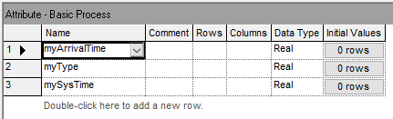
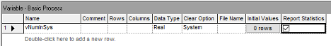
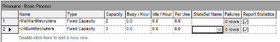
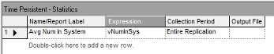
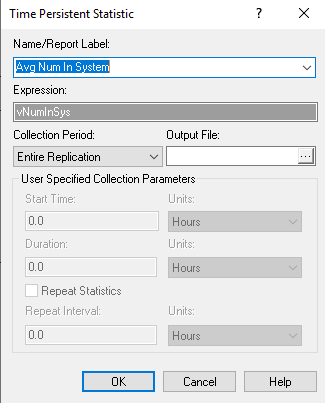
An example of the Edit by Dialog view is shown in Figure 3.10 for the TIME PERSISTENT module. Notice that every Edit by Dialog view has a Help button that allows easy access to the Arena Help associated with the module. The Arena Help will include information about the text field prompts, the options associated with the module as well as examples and their meaning. The TIME PERSISTENT module requires a name for the statistic being defined as well as an expression that will be observed for statistical collect over time. In this case, the variable, myNumInSys, is used as the expression.
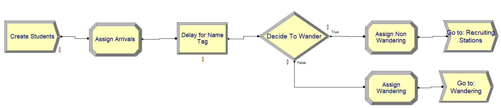
Figure 3.11 shows the module layout for creating the students and getting them flowing into the mixer. These modules follow the pseudo-code very closely. Notice in Figure 3.12 the edit by dialog view of the CREATE module is provided. Since we have a Poisson process with rate 0.5 students per minute, the CREATE module is completed in a similar fashion as we discussed in Chapter 2 by specifying the time between arrival process.
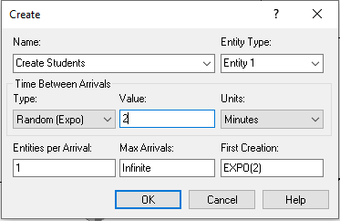
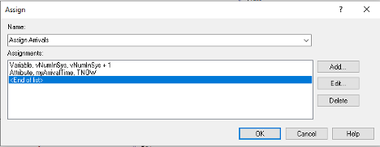
Why are we not using the Poisson distribution in the CREATE module? This is a common point of confusion. The CREATE module requires the time between events, while a Poisson distribution models the number of events. While it is theoretically possible that the Poisson distribution could be used to represent the time between events, it would indeed be a rare occurrence if it was. If you ever want to use the Poisson distribution in your CREATE module then you are either wrong in your thinking or you better know exactly what you are doing! The Poisson distribution models a count of the number of events in a time period. The random variable, time between arrivals, represents time. As such, it is a continuous random variable and thus the Poisson distribution (being discrete) would be highly inappropriate. The confusion stems from the wording of the problem, which commonly states that we have a Poisson process with mean rate \(\lambda\) for the arrivals. There is a theorem in probability that states that if we have a Poisson process with mean rate \(\lambda\), then the time between events is governed by an exponential distribution with a mean of \(\theta = 1/\lambda\). Thus, we would use the Random(expo) option in the CREATE module with the value of \(\theta\) specified for the mean of the distribution.
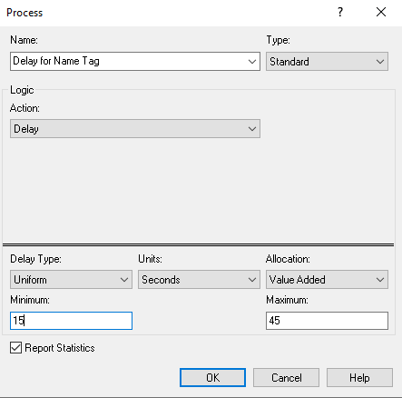
Next, Figure 3.13 illustrates the first ASSIGN module, which increments the number of students in the system and assigns the arrival time of the student. Figure 3.14 shows the dialog box for a PROCESS module with the Delay action to implement the delay for putting on the name tag. Notice that this option does not require a resource as we saw in the Chapter 2. We simply need to specify the Delay action and type of the delay with the appropriate distribution (UNIF(15, 45)), in seconds.
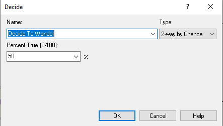
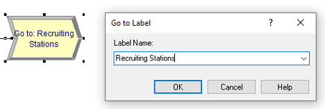
Continuing along with the modules in Figure 3.11, the DECIDE module (shown in Figure 3.15) is used with the 2-way by Chance option, where the branching chance is set at 50%. The two ASSIGN modules simply assign myType to the value 1 (non-wanders) or 2 (wanderers) depending on the result of the random path assignment from the DECIDE with chance option. Finally, we see in Figure 3.16, the GO TO LABEL module, which looks a little like an arrow and simply contains the specified label to where the entity will be directed. In this case, the label is the “Recruiting Stations”.
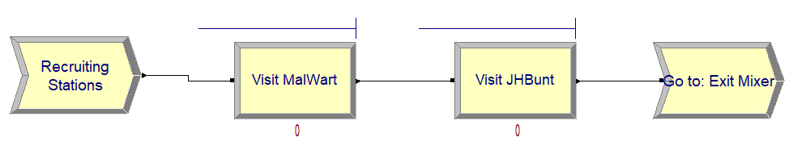
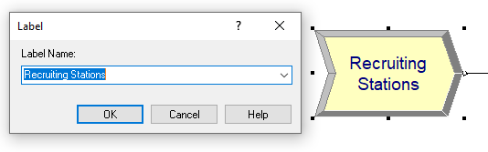
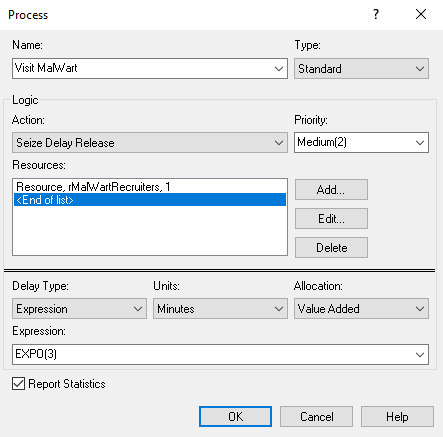
Figure 3.17 shows the module layout for the recruiting station logic. Notice that Figure 3.18 shows the specification of the label marking the start of the logic. Figure 3.19 show the PROCESS module for the students visiting the MalWart recruiting station. Similar to its use in Chapter 2, this module uses the SEIZE-DELAY-RELEASE option, specifies that the rMalWartRecruiter resource will have one of its two recruiters seized and provides the time delay, EXPO(3) minutes, for the delay time.
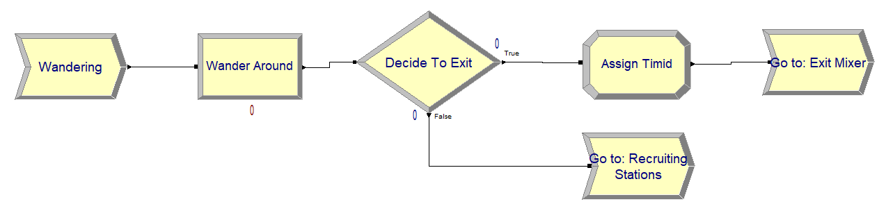
Figure 3.20 illustrates the module flow logic for the students that wander. Here, we again use a PROCESS module with the DELAY option, a DECIDE with 2-way by Chance option and GO TO LABEL modules to direct the students. The ASSIGN module in Figure 3.20 simply sets the attribute, myType, to the value 3, as noted in the pseudo-code.
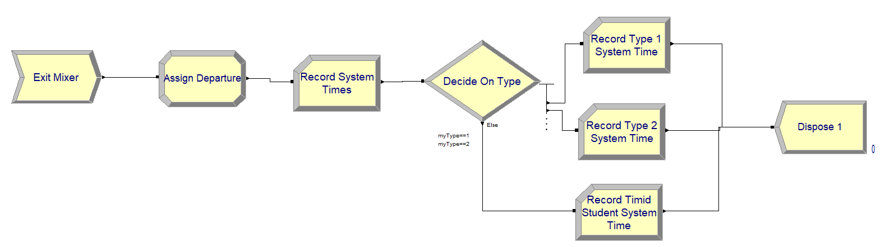
Finally, Figure 3.21 presents the model flow logic for collecting statistics when the students leave the mixer. The ASSIGN module of Figure 3.21 is shown in Figure 3.22.
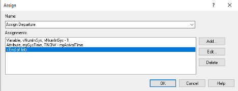
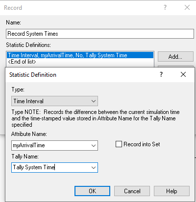
In the ASSIGN module, first the number of students in attending the mixer is decremented by 1 and the value of the attribute, mySysTime, is computed. This holds the value of TNOW – myArriveTime, which implements \({T_{i} = D}_{i} - A_{i}\) for each departing student. Figure 3.23 shows the Time Interval option of the RECORD module which, as noted in the dialog box, “Records the difference between the current simulation time and the time-stamped value stored in the Attribute Name for the Tally Name specified.” This is, TNOW – myArriveTime, which is the system time.
Since this type of recording is so common the RECORD module provides this option to facilitate this type of collection The RECORD module has five different record types:
When Count is chosen, the module defines a COUNTER variable. This variable will be incremented or decremented by the value specified.
This option will cause entity statistics to be recorded.
When Time Interval is chosen, the module will take the difference between the current time, TNOW, and the specified attribute.
When Time Between is chosen, the module will take the difference between the current time, TNOW, and the last time an entity passed through the RECORD module. Thus, this option represents the time between arrivals to the module.
The Expression option allows statistics to be collected on a general expression when the entity passes through the module.
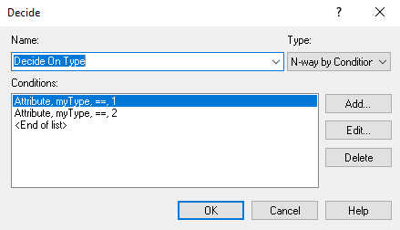
Figure 3.24 shows a DECIDE module with the N-way by Condition option. This causes the DECIDE module to have more than two output path ports. The order of the listed conditions within the module correspond to the output ports on the module. Thus, entities that come out of the first output port have the value of attribute myType equal to 1. The entities entering the DECIDE module must choose one of the paths. Figure 3.25 shows the RECORD module for collection of system time statistics on the entities that have the myType attribute equal to 1. Notice that I have elected to use the Expression option for defining the statistical collection and specified the value of the attribute, mySysTime, as the recorded value. This is the same as choosing the Time Interval option and choosing the myArrivalTime attribute as the time-stamped attribute. This is just another way to accomplish the same task. In fact, the Time Interval option of the RECORD module was invented because this is such a very common modeling task. The rest of the modules in Figure 3.21 are completed in a similar fashion.
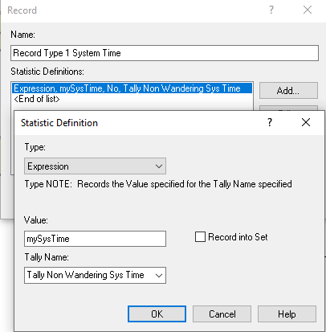
Now we are ready to run the model and see the results. Figure 3.26 shows the Run Setup configuration to run 5 replications of 6 hours with the base time units in minutes. This means that the simulation will repeat the operation of the STEM mixer 5 times. Each replication will be independent of the others. Thus, we will get a random sample of the operation of 5 STEM mixers over which we can report statistics.
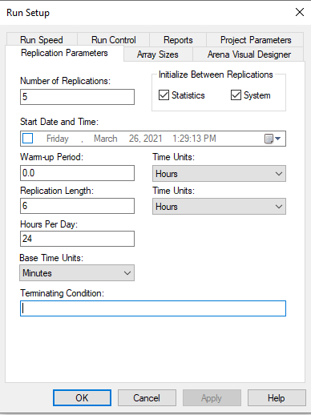
Running the simulation results in the output for the user defined statistics as show in Figure 3.27. We see that the average system time is 39.192 minutes with a half-width of 9.09 with 95% confidence. Notice also that in Figure 3.27 there are two time-persistent statistics reported for the number of students in the system, both reporting the same statistics. The first one listed is due to our use of the TIME-PERSISTENT module. The second one listed is because, in the VARIABLE module, the report statistic option was checked for the variable vNumInSys. These two approaches result in the same results so using either method is fine. We will see later in the text that using the TIME PERSISTENT module will allow the user to save the collected data to a file and also provides options for collecting statistics over user defined periods of time.
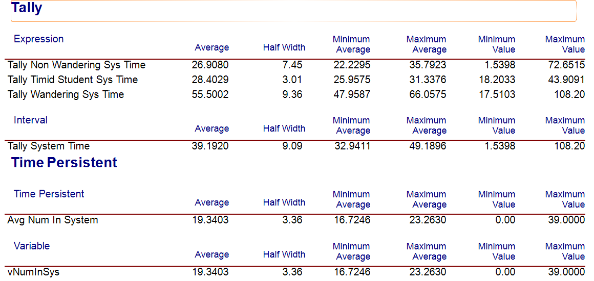
Since the STEM mixer organizer wants to estimate the average time students spend at the mixer, regardless of what they do, to be within plus or minus 1 minute with a 95% confidence level, we need to increase the number of replications. To determine the number of replications to use we can use the methods of Section 3.4.1. Noting the initial half-width of \(h_{0} = 9.09\) for \(n_{0} = 5\) replications, the desired half-width, \(h = 1\) minute, and applying Equation 3.12, we have:
\[ n \cong n_{0}\left( \frac{h_{0}}{h} \right)^{2} = 5\left( \frac{9.09}{1} \right)^{2} = 413.14 \approx 414 \]
Updating the number of replications to run to be 414 and executing the model again yields the results in Figure 3.28. We see from Figure 3.28 that the desired half-width criterion of less than 1 minute is met, noting that the resulting half-width is less than 0.79 minutes.
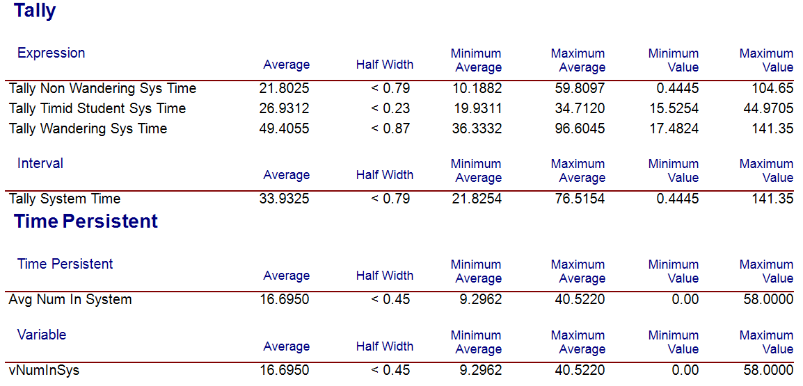
To use the Normal approximation method of determining the sample size based on the Arena output, we must first compute the sample standard deviation for the initial pilot sample and then use Equation 3.6:
\[n \geq \left( \frac{z_{1-(\alpha/2)}\;s}{\epsilon} \right)^{2}\]
To compute the sample standard deviation from the half-width, we have:
\[s_{0} = \frac{h_{0}\sqrt{n_{0}}}{t_{1-(\alpha/2),n - 1}} = \frac{9.09 \times \sqrt{5}}{t_{0.975,4}} = \frac{9.09 \times \sqrt{5}}{2.7764} = 7.3208\]
Then, the normal approximation yields:
\[n \geq \left( \frac{z_{1-(\alpha/2)}\;s}{\epsilon} \right)^{2} = \left( \frac{1.9599 \times 7.3208}{1} \right)^{2} = 205.8807 \cong 206 \]
We can also use an iterative approach based on Equation 3.5.
\[ h\left( n \right) = t_{1-(\alpha/2),n - 1}\frac{s(n)}{\sqrt{n}} \leq \varepsilon \] Notice that the equation emphasizes the fact that the half-width, \(h(n)\) and the sample standard deviation, \(s(n)\), both depend on \(n\) in th formula. Using goal-seek within the spreadsheet that accompanies this chapter yields \(n \geq 208.02 =209\) as illustrated in Figure 3.29.
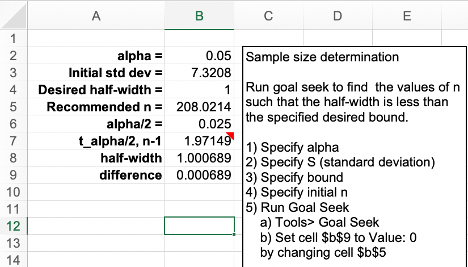
To summarize, we have the following recommendations for the sample size based on the three methods.
| Method | Recommended Sample Size | Resulting Half-width |
|---|---|---|
| Half-Width Ratio | 414 | < 0.79 |
| Normal Approximation | 206 | < 1.16 |
| Iterative Student T Method | 209 | < 1.18 |
As you can see from the summary in Table 3.3, the methods all result in different recommendations and different resulting half-widths. Why are the recommendations different? Because each method makes different assumptions. In addition, you must remember that the results shown here are based on an initial pilot run of 5 samples. Using a larger initial pilot sample size will result in different recommendations. Running the model for 10 replications yields an initial half-width of 5.4 minutes and the recommendations in Table 3.4.
| Method | Recommended Sample Size | Resulting Half-width |
|---|---|---|
| Half-Width Ratio | 292 | < 0.96 |
| Normal Approximation | 219 | < 1.14 |
| Iterative Student T Method | 221 | < 1.14 |
Based on these results, we can be pretty certain that the number of replications needed to get close to 1 minute half-width with 95% confidence is somewhere between 219 and 292. So, which method should you use? Generally, the half-width ratio method is the most conservative of the approaches and will recommend a larger sample size.
Why does determining the sample size matter? This model takes less than a second per replication. But what if a single replication required 1 hour of execution time. Then, we will really care about determining to the extent possible the minimum number of samples needed to provide a result upon which we can make a confident decision. Thus, there is a trade-off between the time needed to get a result and the desired precision of the result. This trade-off motivates the use of sequentially sampling until the desired half-width is met. This is the topic of the next section.
In this section, we will discuss how to determine the sample size for a finite horizon simulation by using a sequential sampling method. The new concepts introduced within this section include:
Defining an OUTPUT statistic using the Statistics Panel
Using a “logical entity” within a model
The MREP and NREP global variables
The methods discussed for determining the sample size are based on pre-determining a fixed sample size and then making the replications. If the half-width equation is considered as an iterative function of \(n\).
\[ h(n) = t_{1-(\alpha/2), n - 1} \dfrac{s(n)}{\sqrt{n}} \leq \epsilon \]
Then, it becomes apparent that additional replications of the simulation can be executed until the desired half-with bound is met. This is called sequential sampling. For this method, the sample size of the experiment is not known in advance. That is, the sample size is actually a random variable. The brute force method for implementing this approach would be to run and rerun the simulation each time increasing the number of replications until the criterion is met. By defining an OUTPUT statistic and using the ORUNHALF(Output ID) function, you can have the simulation automatically stop when the criterion is met.
The pseudo-code for this concept is provided here.
CREATE a logical entity at time 0.0
DECIDE IF NREP <= 2 THEN
DISPOSE
ELSE IF half-width <= error bound THEN
ASSIGN MREP = NREP
END DECIDE
DISPOSEFirst create a logical entity at time 0.0. Then, use the special variable NREP to check if the current replication executing is less than or equal to 2, if it is dispose of the entity. If the current replication number is more than 2, then check if the half-width is less than or equal to the half-width bound. If it is, then indicate the that maximum number of replications, MREP, has been reached by setting MREP equal to the current replication number, NREP.
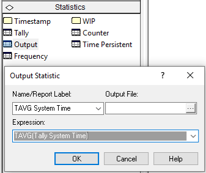
In order to implement this pseudo-code, you must first define an OUTPUT statistic. This is done in Figure 3.30, where the function TAVG(Tally ID) has been used to get the end of replication average for the time spent in both the make and inspection processes. An OUTPUT statistic collects statistics on the expression indicated at the end of a replication. Thus, a single observation, one for each replication, is observed and standard sample statistics, such as the sample average, minimum, maximum, and
This ensures that you can use the ORUNHALF(Output ID) function. The ORUNHALF(Output ID) function returns the current half-width for the specified OUTPUT statistic based on all the replications that have been fully completed. This function can be used to check against the half-width bound.
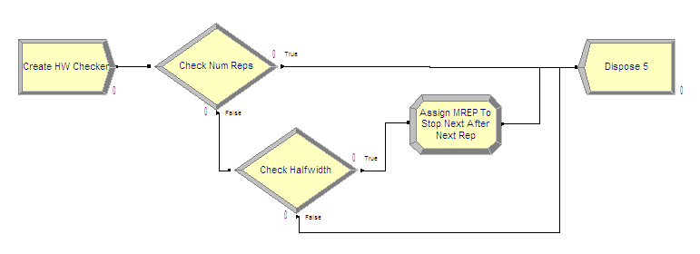
Figure 3.31 illustrates the logic for implementing sequential sampling. The CREATE module creates a single entity at time 0.0 for each replication. That entity then proceeds to the Check Num Reps DECIDE module. The special variable, NREP, holds the current replication number. When NREP equals 1, no replications have yet been completed. When NREP equals 2, the first replication has been completed and the second replication is in progress. When NREP equals 3, two replications have been completed. At least two completed replications are needed to form a confidence interval (since the formula for the standard deviation has \(n-1\) in its denominator). Since at least two replications are needed to start the checking, the entity can be disposed if the number of replications is less than or equal to 2. Once the simulation is past two replications, the entity will then begin checking the half-width.
The logic shown in Figure 3.32 shows that the second DECIDE module uses the function ORUNHALF(Output ID) to check the current half-width versus the error bound, which was 1 minute in this case. If the half-width is less than or equal to the bound, the entity goes through the ASSIGN module to trigger the stopping of the replications. If the half-width is larger than the bound, the entity is disposed.
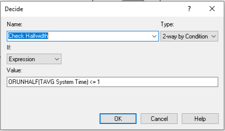
The special variable called MREP represents the maximum number of replications to be run for the simulation. When you fill out the Run \(>\) Setup dialog and specify the number of replications, MREP is set to the value specified. At the beginning of each replication NREP is checked against MREP. If NREP equals MREP, that replication will be the final replication run for the experiment. Therefore, if MREP is set equal to NREP in the check, the next replication will be the last replication. This actually causes one more replication to be executed than needed, but this cannot be avoided because of how the simulation executes. The only way to make this not happen is to use some VBA code. Figure 3.33 shows the ASSIGN module for setting MREP equal to NREP. Note that the assignment type is Other because MREP is a special variable and not a standard variable (as defined in the VARIABLE module).
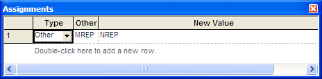
This has been implemented in the file STEM_Mixer_Sequential_Sampling.doe. Before running the model, you should set the number of replications (MREP) in the Run \(>\) Setup \(>\) Replication Parameters dialog to some arbitrarily large integer. If you execute the model, you will get the result indicated in Figure 3.34.
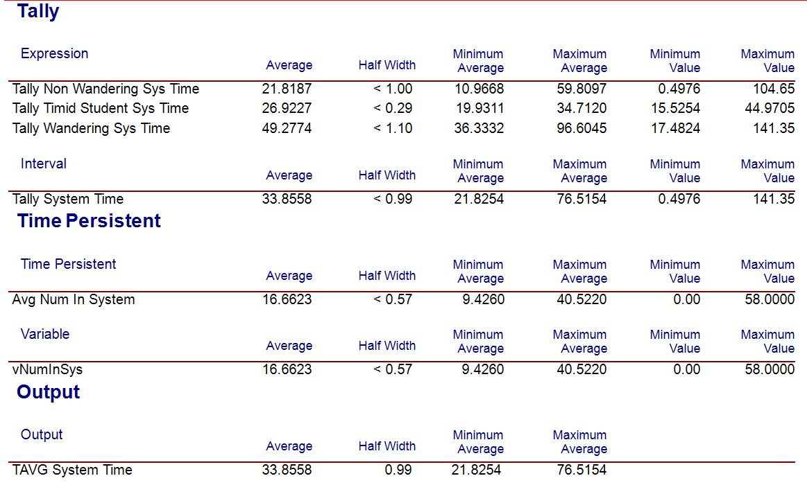
In the sequential sampling experiment there were 280 replications. We saw from Table 3.4 that the sample size should be between 219 and 292 in order to meet the half-width criteria based on an initial sample size of 10 replications. The sequential sampling approach iterates to the minimum number of replications to meet the criteria.
Time based variables within a simulation take on a particular value for a duration of time. For example, consider a variable like NQ(Queue Name) which represents the number of entities currently waiting in the named queue. If \(\mathit{NQ}\) equals zero, the queue is considered empty. You might want to tabulate the time (and percentage of time) that the queue was empty. This requires that you record when the queue becomes empty and when it is not empty. From this, you can summarize the time spent in the empty state. The ratio of the time spent in the state to the total time yields the percentage of time spent in the state and under certain conditions, this percentage can be considered the probability that the queue is empty.
To facilitate statistical collection of these quantities, the frequencies option of the STATISTIC module can be used. With the frequency option, you specify either a value or a range of values over which you want frequencies tabulated. For example, suppose that you want to know the percentage of time that the queue is empty, that it has 1 to 5 customers, and 6 to 10 customers. In the first case (empty), you need to tabulate the total time for which \(\mathit{NQ}\) equals 0. In the second case, you need to tabulate the total time for which there were 1, 2, 3, 4, or 5 customers in the queue. This second case can be specified by a range. For the frequency statistics module, the range is specified such that it does not include the lower limit. For example, if \(\mathit{LL}\) represents the lower limit of the range and \(UL\) represents the upper limit of the range the time tabulation occurs for the values in \((\mathit{LL}, \mathit{UL}]\). Thus, to collect the time that the queue has 1 to 5 customers, you would be specify a range (0, 5]. Frequencies can also be tabulated over the states of a resource, essentially using the STATE(Resource Name) variable.
The file, STEM_Mixer_Frequencies.doe that accompanies this chapter illustrates the use the frequencies option. Figure 3.35 and Figure 3.36 show how to collect frequencies on a queue and on a resource. In Figure 3.36, the categories for the frequency tabulation on the queue have been specified. There have been three categories defined (empty, 1 to 5, and 6 to 10). Since the empty category is defined solely on a single value it is considered as a constant. The other two categories have been defined as ranges. The user needs to provide the value in the case of the constant or a range of values, as in the case of a range. Notice how the range for 1 to 5 has a low value specified as 0 and a high value specified as 5. This is because the lower value of the range is not included in the range. The specification of categories is similar to specifying the bins in histogram. The frequencies option will collect the time spent in each of these categories and also the percentage of the total time within each category.
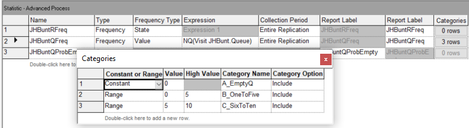
In Figure 3.36, the frequency option is used to automatically track the states of the JHBunt recruiter resource. Resources automatically have a default state set defined which include BUSY and IDLE. Chapter 6 discusses describes additional resource modeling that includes states INACTIVE and FAILED. Since the frequency option will collect the percentage of time spent in the associated states, this represents another method for collecting the utilization of resources. More generally, you can define any state set and track statistics on time spent in the states based on general model logic.
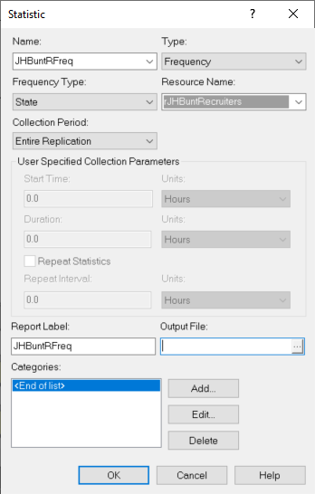
The following quantities will be tabulated for a frequency (as per the help files).
Average time in category. FAVG is the average time that the frequency expression has had a value in the specified category range. FAVG equals FRQTIM divided by FCOUNT.
Number of categories. FCATS returns the number of categories of a frequency, including the out-of-range category. FCATS is an integer value.
Frequency category count. FCOUNT is the number of occurrences of observations for the Frequency Number of values in the Category number; it is an integer value. Only occurrences of time \(> 0\) are counted.
Frequency category high limit. FHILIM is the upper limit of a category range or simply the value if no range is defined for the particular Category number of Frequency Number. FHILIM is user-assignable.
Frequency category low limit. FLOLIM defines the lower limit of a frequency category range. Values equal to FLOLIM are not included in the Category; all values larger than FLOLIM and less than or equal to FHILIM for the category are recorded. FLOLIM is user-assignable.
Standard category percent. FSTAND calculates the percent of time in the specified category compared to the time in all categories.
Time in category. FRQTIM stores the total time of the frequency expression value in the defined range of the Category number.
Restricted category percent. FRESTR calculates the percent of time in the specified category compared to the time in all restricted categories.
Total frequency time. FTOT records the total amount of time that frequency statistics have been collected for the specified Frequency Number.
Restricted frequency time. FTOTR records the amount of time that the specified Frequency Number has contained values in non-excluded categories (i.e., categories that have a value in the restricted percent column).
Last recorded value. FVALUE returns the last recorded value for the specified frequency. When animating a frequency histogram, it is FVALUE, not the FAVG, which is typically displayed.
Notice that the number of occurrences or number of times that the category was observed is tallied as well as the time spent in the category. The user has the opportunity to include or exclude a particular category from the total time. This causes two types of percentages to be reported: standard and restricted. The restricted percentage is computed based on the total time that has removed any excluded categories.
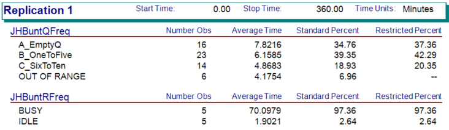
Figure 3.37 illustrates the results from running the STEM mixer model for 30 replications of 360 minutes. For the frequency tabulation on the number students in the JHBunt recruiter queue, there are four not three categories listed. The last category, OUT OF RANGE, records frequencies any time the value of the variable is not in one of the previously defined categories. Note that the categories do not have to define contiguous intervals. As indicated in the figure, the OUT OF RANGE category is automatically excluded from the restricted percentage column. If you add up the percentages in the standard percent column (\(34.76 + 39.35 + 18.93 + 6.96 = 100\)), we see that they add up to 100 percent. The restricted percent column excludes the OUT OF RANGE category and redistributes the time accordingly. Figure 3.38 illustrates the spreadsheet tabulation of the frequency results. This file is available in the book support files for this chapter as FrequenciesCalculations.xlsx. If the number of observations is multplied by the average time in the category, then we get the total time spent in the category. The total of this time should be equal to the time over which the category was observed, in this case 360 minutes. Notice that the OUT OF RANGE category is restricted from the total time to produce the restricted percentages.
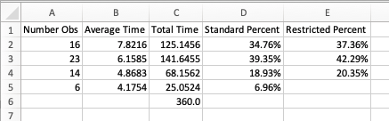
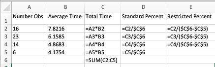
When using frequencies, the frequencies will be tabulated for each replication; however, frequency statistics are not automatically tabulated across replications. To tabulate across replications, you can define an OUTPUT statistic and use one of the previously discussed frequency functions (e.g. FRQTIM, FAVG, etc.). The frequency element allows finer detail on the time spent in user defined categories. This can be very useful, especially, when analyzing the effectiveness of resource staffing schedules. Figure 3.39 illustrates how to set up an OUTPUT statistic to collect the percentage of time that the queue is empty across the replications.
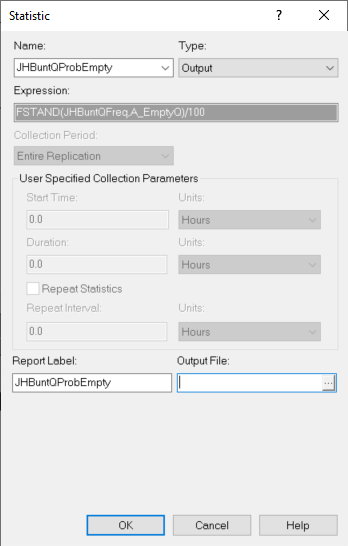
The results from running the model for 30 replications are shown in Figure 3.40. We see that there is about a 38% of the time the queue is empty.
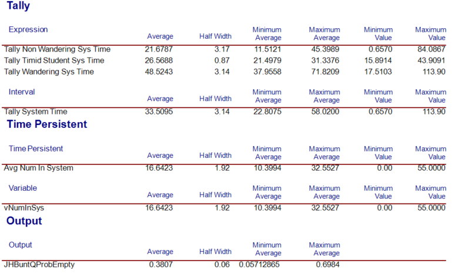
In the following section, we summarize the coverage of this chapter.
This chapter described many of the statistical aspects of simulation that will be typically encountered when performing a simulation study. An important aspect of performing a correct simulation analysis is to understand the type of data associated with the performance measures (time-persistent versus tally-based) and how to collect/analyze such data. Then in your modeling you will be faced with specifying the time horizon of your simulation. Most situations involve finite-horizons, which are fortunately easy to analyze via the method of replications. This allows a random sample to be formed across replications and to analyze the simulation output via traditional statistical techniques.
In the case of infinite horizon simulations, things are more complicated. You must first analyze the effect of any warm up period on the performance measures and decide whether you should use the method of replication-deletion or the method of batch means. These topics will be covered in Chapter 5.
This chapter also provided additional examples of the following Arena modules:
A RECORD module is placed within the model window. It is used to record observations at particular event times as denote by where the module is placed within the flow path of the entity within the model. The RECORD module using the “expression” option will compute statistics on the value computed by the expression. The critical thing to remember about the RECORD module is that it is executed when an entity passes through it. Thus, what it observes (records) will be dependent upon where it is placed and when it is executed.
The STATISTIC module is used to define and collect additional statistics that occur during a simulation. The STATISTIC module also allows for the definition of files to store observed values. First, it allows the modeler to pre-define Tallies and Counters, which are what RECORD modules use. This is similar to using the RESOURCE module to define resources that are used in the model window, or pre-defining variables or attributes before using them in the model. Finally, the STATISTIC module allows the user to define OUTPUT statistics. These work in a similar fashion as how RECORD works, except the expression is observed one time, at the end of the replication. While a RECORD module can observe values at any simulation time, the OUTPUT statistic option of the STATISTIC module can only observe values at the end of a replication.
The STATISTC module also allows for the definition of Time Persistent statistical collection on variables defined in the model. This functionality is the same as checking the “collect statistics” box when defining a variable; however, it also provides additional functionality. First, the modeler can provide their own name for the time persistent statistic and may choose to save the data into a file. Secondly, through the STATISTIC module, the modeler can define periods of time over which statistics can be collected on a variable. This is very useful in simulation situations that have time-varying inputs. Finally, the STATISTIC module allows for the definition of FREQUENCIES to provide finer detailed collect of time persisting variables in states or categories.
This chapter has covered almost all of the most useful aspects of collecting statistics from your simulation model. As a final note, there are other statistics that are automatically collected by Arena, some of which do not add much value to the analysis. For example, when you run your model and view the category reports, the very first item that you see is summary about the number of entities in and out of the model. I strongly recommend ignoring these numbers. They are pretty much useless unless you commit to using Entity Types, for which I have never found a strong use case, except for applications involving activity based costing (See Appendix D).
Now that you have a solid understanding of how to program and model in Arena and how to analyze your results, you are ready to explore the application of simulation to process modeling situations involving more complex systems. These systems form the building blocks for modeling systems in manufacturing, transportation, and service industries.
Exercise 3.1 True or False: The Time Between option of the RECORD module will calculate and record the difference between a specified attribute’s value and the current simulation time.
Exercise 3.2 Provide the missing information for steps for the modeling questions.
What is the \(\underline{\hspace{3cm}}\)?
What are the elements of the \(\underline{\hspace{3cm}}\)?
What information is known by the \(\underline{\hspace{3cm}}\)?
What are the required performance \(\underline{\hspace{3cm}}\)?
What are the \(\underline{\hspace{3cm}}\) types?
What information must be recorded or remembered for each \(\underline{\hspace{3cm}}\) instance?
How are entities (\(\underline{\hspace{3cm}}\) instances) introduced into the system?
What are the \(\underline{\hspace{3cm}}\) that are used by the entity types?
What are the process flows? Sketch the process or make an \(\underline{\hspace{3cm}}\)
Develop \(\underline{\hspace{3cm}}\) for the situation
Implement the model in Arena
Exercise 3.3 The method of \(\underline{\hspace{3cm}}\) assumes that a random sample is formed when repeatedly running the simulation.
Exercise 3.4 Indicate whether or not the statistical quantity should be classified as tally-based or time-persistent.
| Classification | Description |
|---|---|
| The number of jobs waiting to be processed by a machine | |
| The number of jobs completed during a week | |
| The number in customers in queue: | |
| The time that the resource spends serving a customer | |
| The number of items in sitting on a shelf waiting to be sold | |
| The waiting time in a queue | |
| The number of patients processed during the first hour of the day | |
| The time that it takes a bus to complete its entire route | |
| The number of passengers departing the bus at Dickson street | |
| The amount of miles that a truck travel empty during a week |
Exercise 3.5 What module is used to compute statistical results across replications?
\(\underline{\hspace{3cm}}\)
Exercise 3.6 True or False A replication is the generation of one sample path which represents the evolution of the system from its initial conditions to its ending conditions.
Exercise 3.7 In a \(\underline{\hspace{3cm}}\) horizon simulation, a well defined ending time or ending condition can be specified which clearly demarks the end of the simulation.
Exercise 3.8 True or False We use the Arena function, TAVG(), for writing out statistics on the average of observation-based variables.
Exercise 3.9 Which of the following are finite horizon situations? Select all that apply.
Exercise 3.10 Compute the required sample size necessary to ensure a 95% confidence interval with a half-width of no larger than 30 minutes for the total time to produce a part. Given the half-width of the system time after 10 runs is 47.25, compute the sample size using the half-width ratio method. Round the answer to the next highest integer.
Exercise 3.11 Compute the required sample size necessary to ensure a 95% confidence interval with a half-width of no larger than 30 minutes for the total time to produce a part. Given the half-width of the system time after 10 runs is 47.25. Find the approximate number of replications needed in order to have a 99% confidence interval that is within plus or minus 2 minutes of the true mean system time using the half-width ratio method.
Exercise 3.12 Assume that the following results represent the summary statistics for a pilot run of 10 replications from a simulation for the system time in minutes. \(\overline{x} = 78.2658 \; \pm 9.39\) with confidence 95%. Find the approximate number of additional replications in order to have a 99% confidence interval that is within plus or minus 2 minutes of the true mean system time.
Exercise 3.13 Suppose \(n=10\) observations were collected on the time spent in a manufacturing system for a part. The analysis determined a 95% confidence interval for the mean system time of \([18.595, 32.421]\).
Exercise 3.14 Suppose a pilot run of a simulation model estimated that the average waiting time for a customer during the day was 11.485 minutes based on an initial sample size of 15 replications with a 95% confidence interval half-width of 1.04. Using the half-width ratio sample size determination techniques, recommend a sample size to be 95% confident that you are within \(\pm\) 0.10 of the true mean waiting time in the queue. The half-width ratio method requires a sample size of what amount?
Exercise 3.15 Assume that the following table represents the summary statistics for a pilot run of 10 replications from a simulation.
| Simulation Statistics | NPV | P(NPV \(<\) 0) |
|---|---|---|
| Sample Average | 83.54 | 0.4 |
| Standard Deviation | 39.6 | 0.15 |
| Count | 10 | 10 |
Find the approximate number of additional replications to execute in order to have a 99% confidence interval that is within plus or minus 20 dollars of the true mean net present value using the normal approximation method.
Find the number of replications necessary to be 99% confident that you have an interval within plus or minus 2% of the true probability of negative present value.
Exercise 3.16 Consider a manufacturing system comprising two different machines and two operators. Each operator is assigned to run a single machine. Parts arrive with an exponentially distributed inter-arrival time with a mean of 3 minutes. The arriving parts are one of two types. Sixty percent of the arriving parts are Type 1 and are processed on Machine 1. These parts require the assigned operator for a one-minute setup operation. The remaining 40 percent of the parts are Type 2 parts and are processed on Machine 2. These parts require the assigned operator for a 1.5-minute setup operation. The service times (excluding the setup time) are lognormally distributed with a mean of 4.5 minutes and a standard deviation of 1 minute for Type 1 parts and a mean of 7.5 minutes and a standard deviation of 1.5 minutes for Type 2 parts. The operator of the machine is required to both setup and operate the machine.
Run your model for 20000 minutes, with 10 replications. Report the utilization of the machines and operators. In addition, report the total time spent in the system for each type of part.
Exercise 3.17 Incoming phone calls arrive according to a Poisson process with a rate of 1 call per hour. Each call is either for the accounting department or for the customer service department. There is a 30% chance that a call is for the accounting department and a 70% chance the call is for the customer service department. The accounting department has one accountant available to answer the call, which typically lasts uniformly between 30 minutes to 90 minutes. The customer service department has three operators that handle incoming calls. Each operator has their own queue. An incoming call designated for customer service is routed to operator 1, operator 2, or operator 3 with a 25%, 45%, and 30% chance, respectively. Operator 1 typically takes uniformly between 30 and 90 minutes to answer a call. The call-answering time of Operator 2 is distributed according to a triangular distribution with a minimum of 30 minutes, a mode of 60 minutes, and a maximum of 90 minutes. Operator 3 typically takes exponential 60 minutes to answer a call. Run your simulation for 8 hours and estimate the average queue length for calls at the accountant, operator 1, operator 3, and operator 3. Develop an simulation for this situation. Simulate 30 days of operation, where each day is 10 hours long. Report the utilization of the accountant and the operators as well as the average time that calls wait within the respective queues.
Exercise 3.18 Parts arrive to a small manufacturing cell at a rate of one part every 30 \(\pm\) 20 seconds. Forty percent of the parts go to drill press, where one worker drills the hole in 60 \(\pm\) 30 seconds. The rest of the parts go to the hole punch where one worker punches the hole in 45 \(\pm\) 30 seconds. All parts must go to a deburring station, which takes 25 \(\pm\) 10 seconds with one operator. For all parts, they then go through a heat treatment operation for 20 \(\pm\) 10 minutes. For the purposes of this problem, there is always room within the heat treatment area to hold as many parts as necessary. The notation X \(\pm\) Y indicates that the random variable is uniformly distributed over the range (X-Y, X+Y). Build a model that can estimate the following performance measures: 1) average number of parts in the manufacturing cell, and 2) average time spent in the manufacturing cell. Run your model for 20 replications of 100 parts.
Exercise 3.19 Referring to Exercise 3.16. Determine the number of replications to ensure that you are 95% confident that the true expected system time for part type 2 has a half-width of 0.5 minutes or less.
Exercise 3.20 Referring to Exercise 3.17. Determine the number of replications to ensure that you are 95% confident that the true waiting time for the accountant is within \(\pm\) 2 minutes.
Exercise 3.21 Referring to Exercise 3.18. Determine the number of replications to ensure that you are 95% confident that the average number of parts within the system is within \(\pm\) 1 units.
Exercise 3.22 Referring to Exercise 2.20. Determine the sample size necessary to estimate the mean shipment time for the truck only combination to within 0.5 hours with 95% confidence
Exercise 3.23 Referring to Exercise 2.22. Develop an model to estimate the average profit with 95% confidence to within plus or minus $0.5.